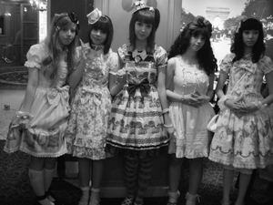
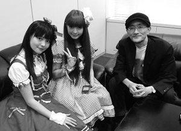

| 英語で話そう！ 世界が恋する日本（ニッポン） ―会話のつかみもTwitterもこれでOK― | |
| 櫻井 孝昌 | |
| アルク (2011) | |
Contents
36 コンビニconvenience store, conbini
47 NARUTO/ONE PIECE/名探偵コナンNARUTO/ONE PIECE/CASE CLOSED
48 鋼の錬金術師/黒執事Fullmetal Alchemist/Black Butler
49 ドラゴンボール/セーラームーンDragon Ball/Sailor Moon
50 涼宮ハルヒ/けいおん！Haruhi Suzumiya/K-ON!
カノン（Studio Blue-3・アンティック-珈琲店-）×櫻井孝昌
青木美沙子（ロリータモデル・看護師）＆上坂すみれ（上智大学ロシア語学科2年生・ロリータモデル）×櫻井孝昌
※本書に掲載された情報は、特に記載のないものは2011年6月現在のものです。
コミュニケーションの本質は語学のレベルではない
海外が精神的に遠いと思っている若者たち。それを自分の語学力のせいにしていないだろうか。
もちろん海外の人とさまざまなシーンでコミュニケーションをとるためには、語学力も大事だ。
だが、人と人をつなぐのは語学力だけだろうか。
私は自分の経験と照らし合わせても、それは断固違うと確信している。
ここで少し、私自身の話をしたい。
私自身は語学に関してまったくダメ人間である。では、海外の若者たちと語学力がないから、深いコミュニケーションがとれていないかといえば、それはノーとこれまた断言できるのだ。
私は、アニメや原宿ファッションなど日本のポップカルチャーを使った文化外交を提唱し、実践しているが、その文化外交で周ってきた20カ国のべ72都市（2011年6月現在）という数が、少しはその証明になるだろう。
私が海外に深くかかわるようになったのは、2007年12月、41歳のときからのことだ。最初の文化外交の訪問地は、チェコのプラハとイタリアのボローニャ、ローマだった。
その後、サウジアラビア、ドイツ、スペインに行き、2008年7月、パリ「ジャパン・エキスポ」での若者たちの熱狂的な日本熱や「日本人になりたい」とさえ叫ぶ日本のカワイイ文化を愛してやまない女子たちを目の当たりにして、文化外交という仕事をライフワークに考えるようになった。これらの旅のことは、拙著『アニメ文化外交』（ちくま新書）や『世界カワイイ革命』（PHP新書）に詳しい。
正直、語学に関していえば、時すでに遅しの感は否めなかった。
だが、同時に海外での講演の機会が激増し、友人も増えるなかで、コミュニケーションの本質は語学のレベルではないということもまた確信にいたるようになった。
私がアニメや原宿ファッションといったジャンルでの文化外交という未知のフィールドを進んでいけるのは、海外で出会った数多くの若者たちに背中を押されているからだ。
私も自らの語学力のなさを痛感し、真剣に英会話を勉強し直そうかなと思った時期も、文化外交を始めた初期にはあった。
だが、私は作家でもあるが、プロデューサーでもある。プロデューサーとして自分のことを見つめ直したとき、私が世界の若者とコミュニケーションし、絆を深めた根底が何かを考えたとき、私自身がアニメ業界や原宿という街とつねに深くコミュニケーションをとっている事実が真っ先に頭に浮かんだ。
だからこそ、私は世界の若者と深く結びつくことができるのだ。
なぜなら、私が日々人や街と会い、話し、考えていることは、日本に関心を持つ若者たちがもっとも知りたいことだからだ。
彼らは私との日常会話を求めているわけではないし、それは私にとっても同じことだ。
通訳を通してでも、片言でもかまわない。会話が流暢に流れるかどうかではなく、何に対してどこまで話しているかが重要なのだ。
だから、私は人と会ったり、考えたり、何かを生み出す時間を優先させることにした。
それなくして、海外の若者たちとの熱いコミュニケーションはありえないだろうから。
現代の若者は世界にアクセスできる既得権を持っている
日本の若者たちとカラオケに行く機会も増えた。彼らがこうした場で積極的に歌おうとするのは、まずアニソンだ。たとえば、『新世紀エヴァンゲリオン』のテーマソング「残酷な天使のテーゼ」を耳にしないカラオケはないと言っても言い過ぎではないだろう。
最近では、それに初音ミクが加わった。"バーチャルアイドル"初音ミクのことは本書のキーワードで取り上げたので、詳しくはそこをご覧いただきたいが、札幌の企業が生んだ"新しい概念"は世界を急速に変えている。
ところで、若者がアニソンやミクを歌いたがるのは、何も日本だけのことではない。世界共通のことなのだ。2010年2月、フランスのマルセイユで開催された「ジャパン・エキスポ・シュード」で、1000人の若者たちがアニソンを日本語で次々に歌っていく光景を目の当たりにして心底驚いたのも、私には今は昔。彼らの気持ちをいまではとても理解できる。日本の若者の間で起きていることは、水紋が広がっていくように世界でも必ず起きているのだ。
私と語学との関係に関しては先に述べたとおりだが、本書を読んでいる10代、20代のみなさんには積極的に語学を学ぶことを推奨したい。
語学は若いうちに勉強したほうがよい。これは自明の理だろう。
そして、少しでも語学を学んだら、積極的に海外の若者と話すのがよい。このことが、まちがいなくさらにみなさんの語学力を上達させていく。
私が10代、20代のころと比較して、10代、20代のみなさんは、その点で圧倒的に有利な状況になっている。
まず、世界の同世代が、日本に非常に高い関心を持っていることがその理由だ。
海外に無数にある、アニメやファッションなどの日本ポップカルチャー紹介イベントに行くと、日本人だからという理由だけで、話しかけられることが非常に多い。
自分に関心を持ってくれている人とのコミュニケーションが、そうでないときと比較して有利なのは言うまでもない。
ついで、世界の若者同士の価値観の共有がすすんでいることが理由としてあげられる。
旅先で私に取材する海外のジャーナリストがよく指摘するように、現代の世界各国の若者たちは人生観や恋愛観などさまざまなシーンで、日本のアニメやマンガの多大な影響を受けている。かつて同じような体験をハリウッド映画やアメリカのロックミュージックでしてきた私には自分のことのようにわかるのだが、思春期という多感な時期に触れた作品は自らのアイデンティティ形成に大きな影響を及ぼしていく。
いま世界の若者にその役割を果たしているのは、日本のアニメやマンガだ。
そして、原宿を中心にした日本のファッション。10代の若者のファッションというのがなかなか存在しない世界に、日本の若者たちは自分たちも気づかない間に大きな影響力を与えていった。日本人からすると意外なまでに若者のファッションに保守的な世界に、日本は「カワイイ」という新たなファッションの定義を投げ込んでしまったのだ。
21世紀に入って、もっとも世界に広まった日本語は「カワイイ」である。現地の言葉にも、英語なら「キュート」、フランス語なら「ミニョン」といった具合に、カワイイに近い言葉はあるのだが、彼らが現地の言葉のなかに当たり前のように「カワイイ」という日本語を混ぜて使うことも多い。「キュート」や「ミニョン」と「カワイイ」は微妙にニュアンスが違うというのだ。そして、彼らが「カワイイ」という価値観を持つにいたったのは、日本のアニメやファッションの影響だ。
価値観が共有されているもの同士の会話はスムーズだ。
日本人同士であっても、価値観が共有できていない者同士の会話はなにかチグハグになることを思い出してもらえばわかるだろう。
お互いの共通理解の上でするコミュニケーションが、会話の上達にプラスにあることはあってもマイナスになることはないのは、専門家でなくても断言できる。
こんなふうに、現代の若者たちは、日本で普通に生きてきたなかで、語学の上達や世界とのコミュニケーションにおける多数の"既得権"のようなものをすでに持っているのだ。
オールド世代から見ればなんとも羨ましい話ではないか。
こんなおいしい状態を使わない手はないと思うのだ。
オタクもYAOIも世界の若者のあこがれの的
単語の意味がわからない人は本書キーワードの該当ページをご覧いただくとして、オタクやYAOIと言った存在は、決して少なくない世界の若者たちの憧れの的になっている。
オタクの受け止められ方も日本国内でもずいぶん印象が変わってきたが、海外ではオタクはよい意味で語られることが多いし、自らがオタクであることを誇りに思っている若者が圧倒的だ。
2011年2月に初めて訪れたメキシコはベラルクルス州都のハラパという市では、オタクであることが若者のなかのステイタスになっていて、「早くオタクになりたい」
などと発言する人もいるのだという話を聞いた。
2010年7月、ゲストとして招かれた、アメリカ東海岸ボルチモアの日本ポップカルチャー紹介イベント「オタコン」の開会式。トップバッターで紹介された私は、何百人という来場者に叫んだ。
「Are you anotaku?」（みんなオタク？）
会場全体から、
「Yes!!」
という絶叫が起こった。
その3カ月後、やはりゲストとして登壇したニューヨーク・アニメ・フェスティバルでも千人を軽く超える来場者に叫んだ。
「Do you like cosplay?」（コスプレ好きですか〜？）
「Yes!!!!」
ウッディ・アレンの映画に描かれたニューヨークで、よもやこんなシンプルな英語で自分のそれまでの人生観を変えるようなコミュニケーションができる日が来るとは。タイムマシンを使い、アメリカ映画に夢中だった少年櫻井にそのことを伝えに行っても、けっして信じてもらえないだろう。
パリ「ジャパン・エキスポ」でも同じようなエピソードがあった。
3000人の来場者を前に歌うことになった女性アイドルに舞台裏でこんなふうにアドバイスしてみた。
「I am anotaku.」（私、オタクなんです）
ってMCのときに話してごらん。
アニメやマンガを愛してやまない彼女の想いは、そのひとことできっと通じると信じたからだ。
「I am anotaku!」
ステージで叫んだ彼女への観衆の熱狂ぶりは日本人全員に見せたいほどだった。
中学1年レベルの構文で気持ちが通じるオタク英会話
人と人が理解しあうためには、会話の流暢さや、長い会話が必ずしも絶対ではないということがおわかりいただけただろうか。
「Do you like cosplay?」
「Are you anotaku?」
こんな中学1年生レベルの"初歩の初歩の"英語でも気持ちは通じあうのである。
気持ちさえいったん通じあえば、あとはテクニックの問題だ。
海外の距離がこれまでとまるで違う距離になったとき、語学の勉強に対するモチベーションはまるで違ってくるだろう。
また、語学が苦手という30代、40代のみなさんも、少なくともこれらのシンプルなひとことで相手の懐を開けることが容易にできるはずだ。
30代、40代の日本人で、アニメやマンガをまったく見たことがない、読んだこともないという人を探すほうが難しいだろう。
つまり、日本人はすでに海外に大きくリーチしているのだ。
『ドラゴンボール』や『セーラームーン』、『聖闘士星矢』といった世界中の共通言語になっているアニメやマンガがどれだけ浸透しているか気づいた瞬間に、みなさんと世界の関係は大きく変わっている。
日本人留学生の減少が止まらない
世界に愛される日本。語学習得へのチャンスも増えている。
だが、そうした世界の想いと逆の方向に日本国内の状況が動いている部分も多い。
それを端的に示しているのが、アメリカへの日本人留学生数の減少だ。
たとえば、アメリカの大学で学ぶ日本人の数は、2009年～2010年で2万4842人。これは国別の順位では6位になる（米国際教育研究所）。
日本人のアメリカへの留学のこれまでのピークは1997年～98年の4万7073人。当時は日本がアメリカへの国別留学者数でトップだった。2005年～2006年以降は減少の一途をたどり、ピーク時と比較して現在は、約半分の数になってしまった。しかも、前年比15.1パーセント減という衝撃的な下がり幅なのだ。
漠然と思っていたことだが、この数字を見たときに、私は本書をどうしても執筆しなければならないと思ったと言っても過言ではないだろう。
今後、ますます海外との関係が経済においても外交においても重要になってくるなかで、留学生の大幅な減少は日本にとって大きな禍根を残すことになるからだ。
留学生数減少の理由としては、就職活動時期が早まっていることや、少子化による日本の大学への入学の容易さなどがあげられることが多いが、私はもっと根の深い部分で留学への意欲が減っていると思っている。
それは、日本人の海外との精神的距離だ。
アメリカ文化に育てられた世代
私の10代は、まさにアメリカ文化にどっぷりつかった少年・青年時代だった。年号で言うと、1975年から1985年。
まず決定的にアメリカから影響を受けたのは、ロックミュージックだった。
出会いはイギリスが生んだロック史上最大のスーパーバンド、ビートルズだったが、イーグルスの世界的ヒット曲「Hotel California」を聴いて以降、イーグルス、ビーチボーイズ、リトル・フィート、ザ・バンド、ドゥービーブラザーズと言ったアメリカンバンド、我が永遠のヒーローであるジャクソン・ブラウンを筆頭に、ダン・フォーゲルバーグ、キャロル・キング、ニール・ヤング(彼はカナダ人だが)、カーラ・ボノフといったシンガーソングライターのアルバムの数々を毎日どれだけ聴いたかわからない。
彼らの音楽は、確実に私の血のなかに色濃くいまでも流れている。
そして、ハリウッド映画。レンタルビデオがなかった当時、日本には名画座と呼ばれる、2本立てや3本立てで映画の旧作を低料金で上映する映画館がたくさんあった。当時のわれわれにとって雑誌「ぴあ」は、そうした名画座で何が上映されるかを知るための雑誌でもあったのだ。2本立て400円というような価格が平均的だったと思う。
レンタルビデオがないということは、映画館を選択できるとはいえ、そのときに全名画座のラインナップを「ぴあ」でチェックしても、上映されている映画は限られている。現在の若者がするように、無数にあるDVDのなかからレンタルショップで1本の映画を選ぶのではなく、流されている映画をあたりかまわず、それこそむさぼるように観ていた時代だったのだ。1年間に100本近い洋画を観た年もあったと思う。
もちろん、なんでこんなつまらない映画に大切なお金を使ってしまったのだろうと思うこともあった。でも、その逆に人生感が変わるぐらいの衝撃を受けることも多かった。
社会風俗やファッション、風景まで、ニューヨークやロサンゼルスといった舞台を通して映し出されるアメリカの日常は、私の人生に決定的に大きな影響を与えていった。
名画座以外でも、当時の地上波には多数の洋画を流す番組があった。各局ともに週に1本は、午後9時から洋画を流すような状況だったのだ。
ジャクソン・ブラウンやイーグルスといったロサンゼルスを中心に活躍するミュージシャンに憧れ、ハリウッドで作られた映画で育った当時の私にとって、ロサンゼルスは約束の地だった。
『アニー・ホール』『タクシードライバー』『ゴッドファーザー』『ティファニーで朝食を』......。数多くの名作に描かれたニューヨークは、オシャレで少し怖くて、まさに大人な街だった。
こんな私のような少年少女は、当時珍しくもなんともなかった。
アメリカに憧れ、アメリカの文化で育った少年少女にとって、アメリカはいつか必ず行かなければいけない国だったのだ。
同じような想いを、フランスのパリに向けた人も多かっただろう。
このころ、アメリカもパリも他の欧米諸国も、航空券代もいまよりずっと高かったし、行くこと自体は大変だったけれど、精神的距離はいまよりもっと近かったのだ。
日本人が知らない、世界に無数にある日本イベント
いつからだろうか、私もハリウッド映画を観る機会がめっきり減っていった。レンタルビデオ店の興隆と同時に、都内にたくさんあった名画座の灯もひとつ、またひとつと消えていった。
映画を観るということが、日本人にとって特別なものではなくなってきたのだ。
音楽のアルバムチャートなどでも、洋楽のにおいがどんどん減っていった。
そして、バブルの崩壊から失われた10年、さらに20年と言われる停滞の時期へ。海外が憧れるものではなくなった時代から、日本は経済も人の心も内向きな時代に突入していった。
ところが、ときを同じくして、海外では別の動きが起こっていた。しかも、圧倒的なパワーを持って、世界的レベルで同時にだ。
それが、21世紀に入ってからの、世界の若者たちの日本熱である。
そのマグマのようなうねりは、ほとんどの日本人が知らないなかで発生していたのだ。
きっかけは日本のアニメ、そしてマンガ。これらポップカルチャーを強く打ち出した、海外の人たちによる海外の人たちのための日本イベントが、世界には無数に存在している。
1万人以上の動員数がある日本ポップカルチャー紹介イベントは珍しくもなんともないし、なかにはパリで毎年7月に開催される「ジャパン・エキスポ」のように17万人（2010年）もの動員数を達成するイベントもあるのだ。
パリのジャパン・エキスポこそ、最近はようやく報道などでも目にする機会が増えてきたが（かくいう私もそれをさまざまなメディアで積極的に報じてきた一人なのだが）、それでもまだ多くの日本人がその存在を知らないのが現実だろう。
その他のイベントにいたっては、10万人規模を誇るものでも、ほぼ日本人全体に知られていない。
「アニメーションは子どもがみるもの」という常識にとらわれなかった日本
言ってしまえば、日本が愛されていることをもっとも知らないのは、当の日本人自身なのである。
では、なぜこうした現象が起きたのだろうか。
それを語る前に、現在の日本熱の根底をつくったアニメに関する日本と他国の状況の違いを説明しよう。
20世紀の世界におけるエンターテインメント業界の一般的な常識は、「メイド・イン・アメリカ」がもっともマスの立場に君臨するというものだった。
アメリカのエンターテインメント産業は世界レベルでのマスメディア戦略をとり、市場を拡大していった。
この動きといわばま逆だったのが、日本のアニメ産業だ。
20世紀におけるアニメーションの常識は、「アニメーションは子どもがみるもの」というものだった。なおかつ、大人"も"一緒に楽しめる、家族で楽しめるものであればなおよいという考えだ。だから、「子ども時代に戻った気分になれる作品」「少年少女の心を取り戻せる作品」といったほめ言葉が出てくる。
いっぽう、日本のアニメは、子ども向けの作品もあるが、子どもがみたらまったく理解できないだろう作品も多い。世界的に人気の高い『新世紀エヴァンゲリオン』などは、その代表といえるだろう。
「アニメーションは子どもがみるもの」という常識を意識せず、クリエイターたちが自分の作りたいものを作りだしていたのが日本のアニメ産業なのだ。
アニメを映像表現の可能性として追い、実写とアニメに表現方法の差以外の壁を創らなかったのが日本のクリエイターたちだ。
現在、世界で日本のアニメに夢中になっている世代は、子どものころからテレビで日本のアニメが当たり前のように流れだしてから時が流れた、第2、第3世代にあたる若者たちである。両親も当たり前のように日本のアニメで育った世代の子供たちが、高校生になり大学生になり社会人になったとき、自分たちが積極的に観たいと思える作品は日本のアニメばかりだったのだ。日本のアニメが世界に広がっていくのはスポンジに水が入っていくようなものだった。
だから、世界でアニメと言えば日本製の商業アニメーションのことを指すのが常識だ。その他のものはアニメーション。日本のアニメは、それだけ海外の人たちにとっても特別な存在なのだ。
日本が愛されていることを知らないのは日本人だけ
では、なぜ日本人は日本が世界に愛されていることに、これまで気づかなかったのだろうか。
それは、現在の日本熱を作った社会的背景にインターネットの存在があるからだ。
アニメをきっかけに、インターネットというメディアを通して、世界の若者たちは日本のさまざまなオリジナリティに気づき、夢中になっていった。
大量のマスメディア戦略を通して認知させていく20世紀型のエンターテインメント業界の常識と異なり、いわば世界各国の人々が「メイド・イン・ジャパン」コンテンツの魅力に自分たちで気づき、夢中になっていったのである。
もちろんインターネット社会では、アニメなら違法ダウンロードや違法視聴といった問題が存在しており、手離しに喜ばれる状況ではない。アニメ業界でいえば、その問題が現状の収益に対する大きな足かせになっているのも事実だ。解決しなければならない課題は山積みである。
だが、その半面、世界規模でアニメ、さらにアニメをきっかけに日本全体の認知や印象が高まったことも事実であり、見方を変えれば大きな世界規模でのビジネスチャンスが生まれたともいえるのだ。
だから、いままず日本がしなければならないことは、日本が愛されているという事実、そしてその根底にアニメがあるのだということを、すべての日本人で共有することなのだ。
なぜアニメがそこまで世界に愛されたのか。
日本人自身が「アニメは子どもがみるもの」という常識を捨て、その理由を自分のこととして考えたときに、大きな変革の波がやってくることはまちがいないだろう。
韓国経済はなぜ世界で強いのか
出口の見えない経済停滞に苦しみ続ける日本。厭世感すら漂いだしかねない状況下、では日本経済は抜本的にそこに向けての変革を行なっているのかと考えたとき、私にはよくわからないことがある。
それは、現在の日本熱をどうしてもっと活用し、世界に積極的に日本人がうって出ないのかということだ。
日本のさまざまな商品を、日本人自身の何倍もお金も労力もかけて手にいれ、それを宝物のように扱っている海外の若者たちに、私はたくさん出会ってきた。
海賊版や違法インターネットの問題も、買いたくても売られていないというからという理由もまた、背景にあるのは事実だ。
なぜこんなにも「メイド・イン・ジャパン」が世界に待たれているのに、そこに商品やサービスを届けていこうとしないのか。
これが、日本経済に対する私の最大の疑問だ。
このことを考えたときに、やはり意識せざるをえないのは韓国の動きだ。
私が文化外交で世界を駆け回ってきた3年半は、韓国企業の躍進と浸透ぶりを目の当たりにし続けた年月でもあった。
海外の路上や施設で見る広告、ホテルや空港のテレビやモニタ......そこに見るのは韓国企業の文字ばかりだ。
また、海外で若者の部屋を取材させてもらうこともあるが、「すべて日本のものでそろえています」と言い切る日本ファンの部屋でも、テレビ、パソコン、携帯電話に関しては、韓国製のことが圧倒的だった。その韓国製のパソコンのデスクトップの背景は日本のファッションブランドだったりするのだから、なんとも皮肉なことである。
本書は厳密にはビジネス本ではないので、韓国企業の海外での強さの秘密に関しては他に機会を譲るが、組織論や経営者論と並び、海外市場に対する積極的な姿勢がその大きな理由であることはまちがいない。
作ってまず売りに行く。このシンプルきわまりないビジネスの根本を、韓流スターやアイドルの圧倒的な人気をバックアップに実行するスピードは、日本企業がとうてい及ばないものである。
そして、もうひとつそれを支えている大きな背景がある。
語学力だ。
日本にやってきた韓流アイドルたちの日本語のレベルの高さに驚いた人も多いだろうが、英語や日本語を流暢に話す人の比率は日本と比較して私自身の体感的にも圧倒的に高い。
海外市場への積極性とスピードの速さ、それを支える語学力の高さ、韓国製品のイメージを高める韓流アイドルやスターの躍進。
韓国経済の世界での躍進には明確な理由があるのだ。
中国の若者たちの語学力の高さ
韓国に続き、今後日本企業にとっての大きなライバルとなることは確実な中国。国民総生産ではついに日本を抜き、世界第2位にのしあがった。
では、中国の若者たちの語学力はどうなのだろうか。
2011年2月19日、上海で日本人アーティストたちによる合同ライブ「アニサマ上海」が開催された。日本最大規模で開催されてきたアニソンライブが初めて海を渡ったのだ。
観客の熱狂会場の上海大舞台は8000人ほどの若い中国人男女で埋め尽くされた。
アニメ『マクロスF』の人気キャラ、シェリル・ノームの劇中での歌唱を担当するMay'nはじめ、ライブの熱気もすごかったが、観客の日本語の理解度にも改めて驚かされた。出演者の日本語MCをかなりの人が理解していたのだ。
出演女性歌手4人による『新世紀エヴァンゲリオン』のテーマソング「残酷な天使のテーゼ」のときは、頭の部分が会場全体の合唱状態になった。
日本人の知らない日本熱の中国での高さと、世界における中国の躍進を裏打ちする語学力の高さ。アニサマ上海は、その両面をはっきりとつきつけたイベントでもあった。
中国の若者の圧倒的な語学力の高さを感じるのは、上海、北京といった日本人にもなじみが深い都市ばかりではない。
2010年1月の初めての訪問以来、いろいろな縁ができて足繁く通ったのが中国西部の内陸の大都市、中国4番目の直轄市である重慶だった。約1年足らずの間に、4度足を運んだ。 長江と嘉凌江という二つの大河に挟まれた重慶の中心部には香港やニューヨークのように高層ビルが乱立する。中国内陸の急速な発展の拠点といえる重慶市の人口は3000万人を超えるが、そこにいる日本人の数はわずか200人足らずだ。
現地の要人と話したときも、もっと日本企業が重慶に投資したらよいのにという話を耳にした。GNP世界第2位の国、中国。その人口約3000万人の発展拠点に日本人が200人しかいないという事実こそ、世界経済のなかでの日本経済を象徴しているといえるだろう。
ところで、私はなぜ1年で4回も重慶に足を運ぶことになったのだろう。
訪中団を率いての訪問だったり、重慶市が主催しているアニメフェア（中国風にいえば、動漫祭）からの招待だったり、著名な日本人監督の取材に同行したりと直接の理由はさまざまだったが、その根っこにはこの地に若い友人がたくさんできたことが大きな理由と言える。
日本のアニメや音楽やファッションが大好きな彼らのことは、私は拙著をはじめさまざまな機会に書き、話してきたが、彼らの存在があったからこそ、世界に無数にある都市のなかで1年間にもっとも多く訪問した都市が重慶になったのだろう。
彼らとのコミュニケーションは日本語である。だが、彼らのほとんどは出会ったとき、旅行でさえ日本に足を運んだことがなかったのだ。そんな彼らが流暢に日本語を駆使し、カラオケボックスでは私がそれまで聴いたことがなかった日本のアイドルの歌を熱唱したりする。圧倒的な語学力の高さを思い知らされる。そして、彼らのほとんどは英語も話せるのだ。
語学が得意でない私がとやかく言えることではないのだが、日本はこれまで何をしてきたのだろうと正直思わざるをえなかった。
いまこそ若者が海外に出て行くチャンス
では、語学力が相対的に弱い日本は、今後世界で韓国や中国の後塵を拝していくだけなのだろうか。
私の答えは、イエスでもあり、ノーでもある。
このまま、日本の若者の海外志向がますます弱まり、内に引きこもるような状況が続くなら、それは日本経済にとって残念な方向に向かわざるをえないことは確実だろう。
だが、状況が再びその逆の方向に向かっていくなら、日本経済や日本企業はまだ大きな挽回のチャンスを持っている。
その最大の理由は、日本のアニメで育った世界の若者たちが、日本という国に敬意を持って、その"ものづくり大国"としての潜在力に期待してくれているからだ。
繰り返しになるが、日本は世界に待たれているのである。
誰も日本のことを知らない、興味がないような状況で、日本企業が製品やサービスを世界に売りにいくことは想像を絶する困難があるだろう。
だが、実際はそうではなく、日本がこれまで経験したことがないほどの"日本熱"に世界はある。
いまこそ、若者は自己実現のためにも、自分がしたい仕事を手にいれるためにも、海外に出ることで大きなチャンスを持っているのだ。
このチャンスをみすみす逃してしまうのは、あまりにももったいない話ではないか。
企業も市場としての海外を意識している。だが、若者の海外志向が薄まっていく雰囲気のなかで、その担い手を海外からの就職希望者に委ねようとしている。
日本の若者は、自分の前にある大きなチャンスを自分自身で放棄してしまっているかもしれないのだ。
世界は何も変わらない
私が若かったころは、海外に行くということは日本との違いを感じることが大きな目的だったかもしれない。
だが、現在は、世界は何も変わらないのだということを、とくに若い人たちは感じることがむしろ大切なのかもしれない。
顔や言葉や属している国家は違っていても、人と人になったとき、世界は何も変わらない。
この事実を感じることが、もう一度日本人の心を海外に向けることになるのではないかと私は思っている。先にも書いたとおり、いまこそ海外に目を向けるチャンスなのだから。
海外に出てこそ日本の良さを見つめ直すことができる。これは昔もいまも変わらないのだが、その感じ方も微妙に違うかもしれない。いまは、日本に深い関心を持ってくれている海外の人の目を通しても、日本を見ることができるのだから。
そのとき、みなさんは気づくだろう。
日本では当たり前に存在するものが、海外では当たり前ではないということ。そして、その当たり前のものに海外の若者が羨望の眼差しを送っていることに。
本書は、英会話を学ぶ本であると同時に、日本人が当たり前のものと思っている（でも海外の人には当たり前でない）キーワードを50紹介し、読者のみなさんと海外の距離を縮めるために作られたものである。極めて実践的な英会話入門書といえるだろう。
中学生レベルの基本構文と、海外の若者が憧れる日本のキーワードに対する知識を共有させることは、現代の英会話入門としては最適と著者は考える。
本書を通して、あらゆる世代の読者のみなさんが、英語力の上達に新たなステップを踏み出してもらえれば著者として幸いのかぎりだ。
つ^^な^^が^^るKey word1
アニメ
anime
↑アニメ関連雑誌も各国で発行されている。パリ
解説
アニメーション（animation）の略語。日本製のアニメは、2011年の調査では世界137カ国の国や地域で放映・配信等の契約がなされている（日本動画協会調査）。経済産業省も「クール・ジャパン」の戦略産業分野のひとつとして位置づけた。アニメはいまや日本と世界をつなぐ最強の架け橋だ。
こんな感じで tweet!
Who's your favorite anime character?
好きなアニメのキャラは誰？
K-ON! is very popular in America now.
『けいおん！』がいまアメリカですごい人気だよ。
Notes
♥ favorite：お気に入りの
♥ character：（作品の）登場人物
♥ popular：人気のある、評判がいい
Sakurai's Review
「ANIME」は世界共通語
アニメはもちろん和製英語だが、いまでは世界中で通じる言葉になっている。海外の人がanimeという言葉を使う場合、それは日本製の商業アニメーションのことを指すことがほとんどだ。つまり、それだけ日本のアニメは海外で特別なものになっているのだ。特別なものというより"当たり前なもの"になっていると言った方がよいだろう。 私が提唱してきた「アニメ文化外交」は、「日本のアニメは好きですか？」という私の問いに、満員の教室最前列に座っていたイタリアの学生が「僕らは日本のアニメで育っているんですよ」と発言したことが大きなきっかけになっている。
いま、海外の人たちが「メイド・イン・ジャパン」と聞いて最も強く認識するのは「アニメ」だろう。家電でも自動車でもない。
そうした状況下、日本人の想像をはるかに超えて、アニメの内容やキャラクターについての話は海外の人たちとのコミュニケーションの武器になっているのだ。
好きなキャラクターを若者に問えば、『涼宮ハルヒの憂鬱』のハルヒや、『けいおん！』の澪といった名前がポンポンでてくることは間違いない。国境をとうの昔から超えているアニメは、日本人が海外で最も使える会話上の助っ人でもあるのだ。
使ってみよう
Try to answer
・Who's your favorite anime character?に答えてみよう。
I like Yui fromK-ON! more than anybody else!
『けいおん！』の唯が、ほかの誰よりも好き！
I like Shizuo Heiwajima fromDurarara!! the best!
『デュラララ!!』の平和島静雄がいちばん好き！
Point
質問のfavoriteには、「いちばん好きな」という最上級の意味が含まれています。the most favorite...といった使い方はしないので注意しましょう。
Speak up!
・「こちらでも〜（アニメ作品）をみんなが見てるよ」を英語で言ってみよう。
Everybody is watchingNaruto here!
こちら（私の国）ではみんな『NARUTO』を見てるよ！
Point
「私の国」はin my countryでもいいですね。「私の知ってる人はみんな〜を見てます」と言いたいときはEverybody I know is watching〜.のように言います。
つ^^な^^が^^るKey word2
マンガ
manga
↑仏語訳されたマンガを11000冊持つジュネーブの書店
解説
日本製のマンガを指すことばとして、海外でも"manga"がほぼ定着している。欧米では、有史以来、横文字を左から右へ読み進める「左とじ」本が出版されてきたが、ファンの熱い要望に応えて、現在ではマンガは日本と同じ「右とじ」が主流。manga人気に押されて文化革命ともいえる現象も起きている。
こんな感じで tweet!
What Japanese manga have you read?
日本のマンガはどんなのを読んだ？
Japanese manga are really interesting.
日本のマンガって、すごくおもしろいね。
Notes
♥ really：（強調して）とても、ほんとうに
♥ interesting：おもしろい、興味がある
Sakurai's Review
海外のマンガショップの充実ぶり
「『NARUTO』や『ONE PIECE』は海外でも出版されていて、けっこう人気らしいよ」
そんな会話をときどき街やメディアで見聞きする。だが、ことはそんなものではない。英語はもちろんだが、フランス語やスペイン語に翻訳されていない連載中の人気マンガはほぼないのではないかというのが世界の現実だ。
国際機関が数多くある街、スイスのジュネーブ。レマン湖のほとりからすぐの「TANIGAMI」という書店に立ち寄ったときのことは忘れられない。地下にあるフランス語に訳された日本のマンガコーナーには、1万1000冊の在庫が置かれていたのだ。これだけたくさんの在庫がある書店は、日本でもなかなかお目にかかれない。
日本人観光客も数多く訪れるパリのオシャレな街並みのなかにも、マンガが売られている書店はごく当たり前にたくさんあり、現地の若者でにぎわっている。
「日本のマンガは先が読めないからおもしろい！」
海外の若者はそう口にする。海外のマンガショップで彼らにお気に入りのマンガを質問すると、こちらも読んだことがないマンガがあがってきたりする。お気に入りの1冊を手に写真に写る彼らの顔はみな笑顔でいっぱいだ。
使ってみよう
Try to answer
・What Japanese manga have you read?に答えてみよう。
I've read a lot of manga. My favorites areFullmetal Alchemist andNana.
マンガはたくさん読みましたよ。お気に入りは『鋼の錬金術師』と『NANA』です。
Point
マンガのタイトルのほかに、好きなマンガ家について尋ねられることもよくあります。
Q: Who is your favorite manga author?（好きなマンガ家は誰ですか）
A: My favorite manga authors are Akira Toriyama and Chica Umino.（私の好きなマンガ家は鳥山明と羽海野チカです）
Speak up!
・「それのどんなところがおもしろかった？」を英語で言ってみよう。
What did you find interesting about it?
Point
find interesting about〜は、「〜についておもしろいと思う」という表現です。質問に対しては、I thought that both the characters and the story were great!（キャラもストーリーも最高だと思いました！）のように答えます。
つ^^な^^が^^るKey word3
少女マンガ
shojo manga
↑少女マンガの各国語訳も盛んだ。バルセロナ
解説
思春期の少女に主にターゲットを絞った少女マンガは、世界の女子の共感を集めている。『NANA』『フルーツバスケット』といった少女マンガ作品は世界的ベストセラーだ。フランスでは大型書店が「Shonen」「Seinen」に並び、「Shojo」コーナーも大きなスペースを構えるなど、少女マンガはマンガの読者層の拡大に大きく貢献している。
こんな感じで tweet!
Have you ever heard ofshojo manga?
少女マンガって知ってる？
I got addicted toshojo manga because ofNana.
『NANA』で少女マンガにはまっちゃった。
Notes
♥ get addicted to〜：〜に病みつきになる、中毒になる
Sakurai's Review
恋する気持ちに国境はない
極めて日本的なマンガだと思っていた少女マンガ『君に届け』にスペインやイタリアの女子が夢中になっているのを目にしたとき驚いたのも、私のなかでは今は昔の話だ。自分が恋していることにさえ気づかないような主人公の気持ちを、積極的に男子に告白すると思っていたラテンの女子たちがなぜ理解できるのか。当時の私にはまだよく理解できなかった。
「私たちはたくさん恋もします。でも、ふられることも多いんですよ。そんなとき、日本の少女マンガにどれだけ救われたことか」
そんなふうに語る女子に、私はたくさん出会ってきた。恋する若者の気持ちに世界に何の違いもない。
少女マンガが、一種のセラピーのような働きもしているのかなと私は思っている。勧善懲悪ではないキャラクターの心理描写やストーリー展開は日本のマンガの特徴のひとつだが、その傾向がさらに強い少女マンガは、だからこそ読者が感情移入しやすいのだろう。
世界的な人気マンガ『NANA』の2人のNANAを指して、私はどちらに近いと説明する世界の女子たちもいる。『フルーツバスケット』や『パラダイスキス』を手に盛り上がっている女子たちに積極的に話しかけてみるのも、自分のなかの国境の壁を壊す近道だ。
使ってみよう
Try to answer
・Have you ever heard ofshojo manga?に答えてみよう。
Yes, I loveshojo manga.
はい、少女マンガは大好きです。
No, what's that?
いいえ、それって何ですか。
Point
少女マンガを知らない人に、おすすめの作品を紹介してみましょう。
I think that boys should readFruit Basket, too!（『フルーツバスケット』は男子にもぜひ読んでもらいたいです！）
From Me to You is a masterpiece!（『君に届け』は傑作だよ！）
Speak up!
・マンガを読んだ感想を英語で言ってみよう。
When I readThe Rose of Versailles I cried like a baby.
『ベルサイユのばら』を読んだときは、号泣しちゃった。
Slam Dunk is so moving.
『スラムダンク』は感動的だね。
Point
「感動的な、心が動かされる」を表す形容詞としては、movingのほかに、touchingも同様の意味で使えます。
What do you think is the most touching anime movie ever?（これまででいちばん感動的なアニメ映画はなんだと思う？）
つ^^な^^が^^るKey word4
コスプレ
cosplay
↑ローマ観光名所スペイン階段に集まったコスプレイヤー
解説
和製英語のコスプレということばは世界中に広がっており、各国でさまざまなイベントが行われている。なかでも2003年に名古屋でスタートした「世界コスプレサミット」は、各国の予選も含めれば数十万人の動員を誇るイベントへと成長を遂げた。15カ国が参加する「チャンピオンシップ」では2009年には日本チームが初の優勝を勝ち取った。
こんな感じで tweet!
Why do you think cosplay is so popular?
コスプレはなんでこんなに人気があると思う？
The World Cosplay Summit will be held in Nagoya next week.
来週、名古屋で「世界コスプレサミット」があるよ。
Notes
♥ Why do you think〜?：なぜ〜だと思いますか。
♥ be held in〜：〜で開催される、開かれる
Sakurai's Review
コスプレの本家、日本
毎年、8月、名古屋で「世界コスプレサミット」が開催され、世界15カ国が参加するチャンピオンシップが実施されている。過去の優勝国は、フランス、イタリアが各2回、ブラジル、日本が各1回だ。
各国の予選会に審査員として出席することもあるが、その盛り上がりは尋常ではない。ステージに1組あがるたびに、熱い拍手や声援が客席から巻き上がる。観客数が数千に及ぶのは珍しいことではない。
世界の日本関連イベントでもっとも盛り上がるのは、間違いなくコスプレだ。そして、世界のコスプレイヤーには「日本のアニメやゲームをコスプレしてこそ本物」という共通認識ができあがっているのがおもしろい。いわば日本は世界中の若者にとってコスプレの"本家"なわけだ。
そんな状況下、コスプレを国全体として斜めに見ている国はおそらく日本なのではないだろうか。このことを世界の人たちに話すと、みなビックリするだろう。世界各国の人たちの日本への親近感を形成するのに、コスプレが果たした役割はとてつもなく大きい。
「世界コスプレサミット」各国代表に選ばれたチーム（2人がルール）がステージで大泣きするのは、すべての日本人に見てほしい光景だ。
使ってみよう
Try to answer
・Why do you think cosplay is so popular?に答えてみよう。
Everybody wants to become his or her favorite character!
みんな自分の好きなキャラになってみたいからね!
I think it might be because everybody would like to be an anime or manga character.
アニメとかマンガの登場人物になりたいと思うからかな。
Point
「なぜ〜だと思う？」は、Do you think ...?ではなく、疑問詞のWhyで始めることに注意しましょう。2番目の回答例、I think it might ...を使うと、「〜かもしれないと思う、〜なんじゃないかと思う」と、推測して意見を言うニュアンスになります。
Speak up!
・「今度のコスプレイベントに行く？」を英語で言ってみよう。
Are you coming to the next cosplay event?
Point
「〜に行く」は、聞き手が話し手に同行する場合にはcomeが使われます。comeの代わりにgoを使うと、話し手・聞き手のいる場所とは別の方向へ向かう（遠ざかる）意味になるので、自分（話し手）は必ずしも一緒には行かないニュアンスになります。
つ^^な^^が^^るKey word5
フィギュア
anime figure
↑ブラジル・サンパウロのフィギュア愛好家
解説
コレクターの心をくすぐる2.5次元、フィギュアの世界。キャラクターの資料を集めてイメージを膨らませ、合成樹脂で成形を終えるまでには、数カ月以上かかることもあるという。その後の塗装で陰影を演出し、顔料を重ねながら質感を出していく細やかな技術も日本のお家芸だ。
こんな感じで tweet!
Where can I find a shop selling lots of anime figures?
フィギュアをたくさん売ってるショップはどこにあるの？
Anime figures are really prized by someotaku.
フィギュアはオタクの宝物だよ。
Notes
♥ Where can I find〜?：〜はどこにありますか。
♥ be prized to〜：〜にとってとても大切な、価値のある
Sakurai's Review
評価される日本のフィギュアの精巧さ
日本製のフィギュアが売られているショップもまた、海外の大都市には必ずと言ってよいほど存在している。上海でもパリでもサンパウロでもメキシコシティーでも、その光景はいっしょだ。海外で多数開催されている"現地の人による現地の人のための"アニメイベントに多数並ぶ物販ブースでも、花形はマンガと並んでフィギュアだ。いわゆる"大人買い"をしていくファンの光景も目撃できる。
私がこれまで見てきた経験では、『新世紀エヴァンゲリオン』のレイやアスカのフィギュアが最も多かったが、『涼宮ハルヒ』シリーズのキャラクターもそれに匹敵する勢いで、最近では『けいおん！』のキャラクターや「初音ミク」も急増している。
日本への旅行者は、ぜひ東京・秋葉原や大阪・日本橋などの専門店に連れていってあげてほしい。まちがいなく感動されるだろう。
「日本はものづくりに細かいところがすごい！」
いま世界の若者が日本のお家芸の「技術」を最初に評価するきっかけは、アニメだ。そして、フィギュアの精巧さは、細かい物づくりというポイントの象徴でもある。
海外へのお土産に、フィギュアはお薦めだ。ここぞというタイミングでプレゼントすれば喜ばれるだろう。
使ってみよう
Try to answer
・Where can I find a shop selling lots of anime figures?に答えてみよう。
Akihabara is the best place for that!
秋葉原がいちばん！
I'd suggest Akihabara or Nakano.
秋葉原か中野がおすすめです。
Point
the best place for ...（〜に最適な場所）は、人におすすめの場所などを尋ねられたときに便利な表現。suggest（〜をすすめる）とあわせて覚えておきましょう。
Speak up!
・「あのフィギュア、原作のイメージがすごく出てるね。ファンなら買いだね！」を英語で言ってみよう。
That figure is so faithful to the original. It's a must for fans!
Point
「ファンなら買いだね（買うべきだ）」は、a must for〜 を使ってみましょう。このmustは数えられる名詞で、「絶対必要なこと［もの］、なくてはならないもの」という意味です。
つ^^な^^が^^るKey word6
同人誌
doujinshi
↑アメリカでも若者の同人誌活動は盛んだ。ボルチモア
解説
同人誌はアニメ・マンガファンたちが自費で出版したマンガ本。1975年に始まった同人誌即売会の代表格「コミケ（コミックマーケット）」は、現在では50万人を超える来場者が詰めかける世界最大級の有料屋内イベントに拡大した。
こんな感じで tweet!
Where can I getdoujinshi?
同人誌はどこで買えるの？
I have a lot ofdoujinshi.
同人誌をたくさん持ってます。
Notes
♥ Where can I get 〜?：〜はどこで買えますか。
Sakurai's Review
同人誌ブースに並ぶ若者たち
海外のアニメやマンガを核にした日本イベントに出向くとかなりの確率で再会するアメリカの会社がある。
日本の同人誌を販売する会社で、彼らは「YAOI」というジャンルを専門に扱っている。ブース前は、いつもお気に入りを探す女子たちでいっぱいだ。
同人誌とはプロではない作家が作った小冊誌で、小説などもあるが、近年、同人誌と言えばマンガを指すことが一般的になってきている。東京には、日本最大級の動員数を誇る物販イベント「コミックマーケット（通称コミケ）」が年2回開催されており（2010年12月の動員数は約52万人）、海外の若者の多くに「一生に一度は行きたい場所」として憧れの存在になってきている。私もコミケのおかげで、海外の友人と日本で再会できている。
自分の好きなアニメやマンガをモチーフにした日本の同人誌は、海外のファンにも垂涎の的だ。
海外のアニメ・マンガイベントには、開場前から長い行列ができるが、同人誌販売ブースにいち早く駆け付けるために並ぶ若者も多い。大量生産ではない同人誌の"掘り出し物"を手にいれるためには数時間並ぶことも彼らはいとわないのだ。
使ってみよう
Try to answer
・Where can I getdoujinshi?に答えてみよう。
In specialized stores. Try Nakano or Akihabahara, and Ikebukuro for girls.
専門店で買えるよ。中野や秋葉原とか、女子向けなら池袋へ行ってみて。
Comiket and otherdoujin events are the best places!
コミケやほかの同人イベントで買うのがベストだね！
Point
日常会話では、上の例のように繰り返しの部分（ここではYou can getdoujinshi）を省略して、In specialized stores.とだけ答えるほうが自然です。
Speak up!
・「次のコミックシティーで同人誌を売るから、ぜひスペースに寄ってね」を英語で言ってみよう。
I am going to sell mydoujinshi at the next Comic City, please come by my space!
Point
come by〜 は、上の例のように「〜に立ち寄る」という意味のほかに、「〜を手に入れる」という意味でも使われます。
つ^^な^^が^^るKey word7
オタク
otaku
↑「OTAKU」を店名に入れたスペインのマンガ専門店
解説
オタク（otaku）はもともと日本のアニメ・マンガの熱心なファンを指すことばだったが、現在では世界で通用する共通語となった。アニメやマンガの出版物やソフト、フィギュアなど関連商品のコレクション、コミケ、コスプレなどに出費を惜しまないオタクたちは、野村総合研究所の2005年調査によれば、日本で4110億円規模といわれる消費市場を担っている。
こんな感じで tweet!
Are you anotaku?
あなた、オタク？
We have anotaku club.
僕たち、オタクのサークルをやってるよ。
Notes
♥ club：クラブ、サークル
Sakurai's Review
世界は日本人のオタクを待っている
海外の日本ポップカルチャーイベントの開会式や、コスプレイベントなどでオープニングの挨拶を依頼されることがしばしばある。ステージの前には数千人の来場者がいることもある。
そんなときはノリがいちばんなので、通訳を通さずに、超シンプルな英語だけで乗り切ってしまう。
開口一番「Are you anotaku?（みんな、オタクかーい？）」。これがもっとも会場の反応が熱い。アメリカでもメキシコでもそうだった。
オタクであることはステイタス。そう考える海外の傾向は日増しに強くなっている。メキシコのハラパという地方都市では、「早くオタクになりたい」と言いながら日々精進している若者が多いと聞いたときにはさすがに驚いた。オタクをめぐる状況は中国でも変わらない。中国語では「宅男」と書くが、中国の同人誌イベントなどでは、この文字がそこかしこに見受けられるし、実際彼らにOTAKUと日本語で呼ぶと喜ばれる。
「Are you anotaku?」と聞くからには、「I am anotaku!（私もオタク！）」であることも重要になってくる。いま、海外の若者ともっとも瞬時にコミュニケーションできる逸材は間違いなく日本のオタクだ。世界は日本人のオタクを待っている。
使ってみよう
Try to answer
・Are you anotaku?に答えてみよう。
I am a totalotaku!
私は完全にオタクです！
I am akakure (hidden)otaku. I like to keep my hobby private.
隠れオタクだよ。自分の趣味は非公開にしておきたいんだ。
Point
totalは、「完全な、まったくの」という意味の形容詞で、次に続く名詞を強調します。keep〜privateは、「〜を秘密にする、ないしょにする」という決まり文句です。
Speak up!
・「オタクがよく観るアニメやマンガを教えて」を英語で言ってみよう。
Can you tell me some anime and manga titles thatotaku like to watch?
Point
Can you tell me some ...?は「当然（よく観るアニメやマンガが）あるだろう」という前提で、疑問文でsomeが使われています。someとanyは、文の形ではなく、肯定的な意味か否定的な意味かで使い分けましょう。
つ^^な^^が^^るKey word8
メイド
maid
↑ゼミの授業にメイド喫茶を組み込んだハワイの大学。ホノルル
解説
オタクが集う秋葉原の代名詞にもなっているメイド喫茶。メイド服以外にも、和風やアニメキャラのコスチュームなど、店のコンセプトに応じて様々な演出がなされている。服装だけでなく、礼儀正しい接客やなごみ系のサービスが男女問わず人気だ。台北や上海など海外にもメイド喫茶は存在している。
こんな感じで tweet!
Do you have any recommendations for maid cafes?
どこかおすすめのメイド喫茶はある？
A lot of girls like to dress up as maids.
メイド服を着てみたいなあと思ってる女子はたくさんいるよ。
Notes
♥ recommendation：推薦、おすすめ
♥ like to do：〜するのが好き、〜したい
Sakurai's Review
メイド体験で日本人理解?!
秋葉原のメイド喫茶には日々たくさんの海外観光客が訪れている。ある台湾の友人女子は、旅行会社の添乗員として来日したときにメイド喫茶にはまり、台北でメイド修業をした後にワーキングホリデーで再来日、メイドになった。帰国した彼女の夢は、台北に日本と同じメイド喫茶を作ることである。
アジア以外でも、メイドに憧れる海外女子に出会う。理由を聞くと、「メイド服がカワイイから」という答えが圧倒的に多い。
私がハワイ・ホノルルで出会った大学教授は、授業の一貫として学生がメイド（男子学生は執事）になる実践型ゼミを、ハワイのアニメ関連コンベンション「カワイイコン」で実施していた。日本人の考えについて学ぶには、メイドを体験してもらうことがいちばんと考えてのことだった。
日本に行ったらメイド喫茶に行きたい。そんな彼らが来日したとき、おすすめのメイド喫茶を紹介できる、あるいは連れていってあげられるようにお気に入りの店を持っておくことも、海外とのコミュニケーション術の必須事項なのかもしれない。
メイド喫茶は数も多いので、準備していないと、いざ当日になって困ってしまうかも。
使ってみよう
Try to answer
・Do you have any recommendations for maid cafes?に答えてみよう。
My favorite isZZZ Cafe in Akihabara.
お気に入りは秋葉原の「ZZZカフェ」です。
TryXXX Cafe in Akihabara.
秋葉原の「XXXカフェ」に行ってみて。
Point
Try〜.「〜を試してみて」は、物事、食べ物など、いろいろなことを提案するのに使える便利な表現です。Do you have any recommendations for〜（〜のおすすめはある？）とあわせて覚えておきましょう。
Speak up!
・「いちばん可愛いメイド服はどこで売ってると思う？」を英語で言ってみよう。
Where do you think they sell the cutest maid outfits?
Point
「〜はどこで売っていると思う？」はWhere do you think they sell〜?でOK。単純に「どこの店？」と尋ねたい場合はIn what store?が使えます。
つ^^な^^が^^るKey word9
執事
shitsuji,butler
↑『黒執事』が執事ブームのきっかけに。ボルチモア
解説
メイド喫茶に始まったカルチャーは、「お帰りなさい、お嬢様」と、礼儀正しい執事が優雅に接客してくれる執事喫茶へとつながっていった。執事喫茶のなかには人気が高いために事前の予約が必要な店もある。スイーツや飲み物、店内の内装など、すべてに女性客を意識したこだわりが見られる。
こんな感じで tweet!
Do I need to make a reservation before going to a butler cafe?
執事喫茶に行くには予約が必要なの？
I would like to be scolded by a handsome butler.
美形の執事にしかられてみたいな。
Notes
♥ make a reservation：予約する
♥ scold：〜をしかる
Sakurai's Review
メイド喫茶から執事喫茶へ
いま海外で圧倒的に人気のあるマンガ＆アニメのひとつに『黒執事』がある。どれぐらい人気かと言うと、講演などで『黒執事』の話に触れたり、コスプレイヤーの写真を見せたりすると来場者の女子たちから悲鳴があがるほどだ。
あるアメリカの書店で見かけた光景もすごかった。レジ台の下に『黒執事』の主人公セバスチャンのポスターが貼られていたのだが、客の女子二人組が床に座って、「ハロー、セバスチャン！」と話しかけていたのだ。執事人気ここに極まるといった感だった。
メイド喫茶から執事喫茶への発展を考えると、そこに日本という国の特徴が見えてくる。メイド喫茶がビジネスチャンスとみれば、そのチェーン店展開など規模を拡大させていくのが、世界におけるビジネスの考え方の主流だろう。
だが、日本ではメイド喫茶をアイデアの根源に、執事喫茶、コスプレ喫茶など、業態の種類もまた多角化させていった。
こうした日本人の発想の柔軟性にも、海外の人たちは魅せられている。日本にいるとごく当たり前のことが海外から見れば当たり前ではない。日本は日本にしかないものやサービスを創りだす国に世界からは見えているのだ。
使ってみよう
Try to answer
・Do I need to make a reservation before going to a butler cafe?に答えてみよう。
Yes, you can do it online.
必要だよ。ネットで予約できるよ。
I think so. You should check the website.
必要だと思う。サイトをチェックすればどう？
Point
do it onlineは「オンラインで（それを）する」の意味。onlineには、名詞、形容詞、副詞の用法があり、ここでは副詞として使われています。二つ目の英文のcheck a website（ウェブサイトをチェックする、調べる）もよく使う表現です。
Speak up!
・「初めて執事喫茶に行ったけど、想像してたよりずっと楽しかった」を英語で言ってみよう。
I went to a butler cafe for the first time and it was more fun than I thought.
Point
「想像していたよりずっと〜だった」は、比較級＋than I thought[imagined] を使います。「期待していたより」と言いたい場合はthan I expectedとなります。そのほかに執事喫茶でよくある質問としては、What should I wear to a butler cafe?（執事喫茶って、どんな服を着ていけばいいの？）があります。
つ^^な^^が^^るKey word10
アイドル
idol
↑アイドルを応援するオタ芸も世界に飛び火。メキシコ市
解説
日本のアイドルの人気は、マンガやアニメの浸透とともにここ数年海外でも高まりを見せている。日本のアニメに興味を持ったことからそのアニメソングを歌う日本のアイドルやアーティストに興味を持つようになった海外ファンも少なくない。
こんな感じで tweet!
Are Japanese idols well known in France?
フランスでも日本のアイドルは知られてるの？
There are a lot of idol groups in Japan.
日本にはたくさんアイドルグループがいるよ。
Notes
♥ be well known：よく知られている
♥ There is/are〜.：〜がある（いる）
Sakurai's Review
大きな潜在力を持つ日本のアイドル
韓流アイドルブームに世界ではかなり水をあけられているのが現実だが、日本のアイドルシーンが、男女ともに大きな潜在力を持っていることは間違いない。日本のアイドルが大好きな海外の若者たちもまた世界には日本人の想像以上に存在しているのである。
2010年7月のパリ「ジャパン・エキスポ」では、モーニング娘。が30ユーロという、欧州の相場としてけっして安い値段ではない有料コンサートで4000人の来場者を集め、日本アイドルの海外進出への大きな可能性を示した。アイドルが好きか嫌いかの問題以前に、女子アイドルグループに男女半々ぐらいの割合のパリっこたちが熱狂しているさまは日本人として素直に感動すべき光景だった思う。
ジャパン・エキスポのような海外イベントに行くと、アニメやマンガのキャラクターと並んで日本のアイドルの写真を数多く見ることになる。
女子たちに話を聞けば、日本の男子アイドルや俳優の名前が理想の男性像としてばんばんあがってくる。
「日本のアイドルは売れてもセレブにならないところがいい」
ある若者の発言だ。クラスの隣の席にいそうというのも、日本のアイドルの魅力のひとつだ。
使ってみよう
Try to answer
・Are Japanese idols well known in France?に答えてみよう。
Not to the general public, but a lot of anime fans are aware of them.
一般的とは言えないけど、アニメファンの多くには知られてるよ。
Point
general publicは「（世間）一般の人」の意味。be aware of〜「〜に気がついている、〜を知っている」は、外からの情報などでそのことに気づかされるニュアンスで使われます。
Speak up!
・「今度のジャパン・エキスポに有名なアイドルグループが出るらしいよ」を英語で言ってみよう。
I heard that some famous idol groups are going to perform at the next Japan Expo.
Point
I heard (that)〜 で、「〜とうわさに聞いている、〜だそうだ」の意味です。be going to〜 は近い未来の予測を表します。
つ^^な^^が^^るKey word11
ビジュアル系
visual-kei
↑人気バンド「アンティック-珈琲店-」のファン。モスクワ
解説
ユニセックスな化粧や髪型、衣装など、外見も重視するアーティストやその作品を指す。外見重視は欧米のロックアーティストに敬遠される傾向があるのに対し、外見も表現の一部としてとらえるビジュアル系は、「形」を尊重する日本の伝統芸能、歌舞伎にたとえられることもある。
こんな感じで tweet!
What do you like about visual-kei?
ビジュアル系のどんなところが好き？
The Japanese expression"visual-kei"is also used abroad.
海外でも日本語で「ビジュアルケイ」って言うよ。
Notes
♥ What do you like about〜?：〜の何（どこ）が好き？
♥ expression：表現
Sakurai's Review
日本発祥の文化、visual-kei
海外の若者と話すと、必ず感じるのが日本のビジュアル系人気だ。通訳にどう訳すか尋ねられることが多いが、ビジュアル系は海外でも「visual-kei」と日本語のままで使われる。つまり、海外にはそれまでなかった概念なのだ。もちろん男性が化粧をするロックというのは、グラムロックのようにこれまでも存在してきたが、日本のビジュアル系（音楽自体とアーティスト自体、どちらに対しても使われる）は海外の若者にとってそれと違う、特別な存在。ANIMEと言えば日本の商業アニメーションのことを指すのと同じことだ。
「ロシアでは、それまでロックとは男子が聴くものでした。マッチョなイメージ。それを日本のビジュアル系が女子にもロックの魅力を教えてくれたんです」
モスクワのビジュアル系ファンは、こう語った。
2010年は、アンティック-珈琲店-（アンカフェ）のカノンや、AYABIEのインテツら、海外で非常に人気の高いビジュアル系グループのメンバーと海外に出向いた。サイン会に並ぶ長蛇の列、イベント会場で炸裂する女子の悲鳴。それはまるでビートルズが人気絶頂のときの映像を見るかのような光景だった。バンド活動の比較的初期から海外を経験している彼らが日本PRに果たした功績は実はとても大きいのだ。
使ってみよう
Try to answer
・What do you like about visual-kei?に答えてみよう。
The androgynous look!
中性的なところ！
The cool and mysterious look!
クールでミステリアスなところ！
Point
この例文のlookは名詞で、「服や髪形などのファッション、スタイル」の意味です。身体的な特徴（顔つきなど）の意味で使う場合はlooksと複数形にします。
Speak up!
・「ビジュアル系バンドで大事だと思うのは音楽性？ それともビジュアル？」を英語で言ってみよう。
Which do you think is more important for a visual-kei band, the music or the look?
Point
「どちらが大事だと思う？」は、Which do you think is more important... ?を使います。ここでの「ビジュアル」は、Try to answerで解説したように、the lookと訳します。
つ^^な^^が^^るKey word12
初音ミク
Hatsune Miku
↑世界でもっとも多いコスプレは初音ミク!? ホノルル
解説
「初音ミク」は自分がコンピュータ上で作成した曲を歌ってくれるバーチャルアイドルの名前であり、商品名である。札幌のクリプトン・フューチャー・メディア社が世に出した。ネット上には無数の「初音ミク」の楽曲、その動画、派生キャラなどが存在している。
こんな感じで tweet!
Have you ever sung any Hatsune Miku songs?
初音ミクの曲、歌ったことある？
You can sing Vocaloid songs at karaoke places in Japan.
日本はカラオケでボーカロイドの曲が歌えるよ。
Notes
♥ Have you ever sung〜?：〜を歌ったことがありますか。
Sakurai's Review
過去の成功方程式を覆せ！
海外の日本ポップカルチャー紹介イベントで、現在もっとも多く見ることができるコスプレは初音ミクだろう。初音ミクは、自分がコンピュータ上で作成した曲を歌ってくれるバーチャルアイドル。インターネット上には無数の作者によるミクの歌がアップされている。初音ミクをはじめとするバーチャルアイドルを総称してボーカロイドと呼ぶこともある。
従来のキャラクターとミクが大きく異なる点は、ソフトのパッケージに描かれたミクをある程度自由にデフォルメすることが許されていること。無数の曲がネット上に存在するのと同じように、さまざまなイメージのミクもまた多数存在する。
20世紀的なマスメディアへの大量露出戦略とはまったく異なる形態で世界を席巻した初音ミク。ゆえに、いま世界でもっとも愛されている日本のキャラクターのひとつであるにもかかわらず、知らない人はまったく知らないのが初音ミクの興味深い点だ。
日本が先の見えない長い停滞から脱却するためには、根本的な経済の発想の転換をしなければならないのは目に見えている。従来のキャラクタービジネスとまったく異なる方法論から生まれたバーチャルアイドルは、日本が再び世界に向かっていくための希望の星でもある。
使ってみよう
Try to answer
・Have you ever sung any Hatsune Miku songs?に答えてみよう。
Yes, I love Hatsune Miku!
はい、初音ミクは大好きです！
No, but I want to try!
いいえ、でも歌ってみたいです！
Point
質問されたとき、ただYes, Noと答えるのでなく、上の例のようにひとこと添えると次の会話につながるきっかけになりますね。
Speak up!
・「ミクの新しいオリジナル曲をアップしたんだけど、聴いてくれた？」を英語で言ってみよう。
I uploaded a new original track I made with Miku. Have you listened to it?
Point
アルバムなどを構成する、別々に録音された一つの曲を指す場合はtrackを使います。
つ^^な^^が^^るKey word13
ドール
doll
↑バルセロナのスペイン人女子の部屋
解説
着せ替えやウィッグの交換、パーツの改造など、ユーザーの好みに合わせてさまざまなカスタマイズを楽しむことができるドールの魅力。ユーザーのコミュニティやイベントも盛んだ。スーパードルフィー、ブライスといったドールは、海外ファンに熱い視線を注がれている。
こんな感じで tweet!
Which of the two types of ball-jointed doll do you like better?
2種類の球体関節人形のどっちが好き？
I had no idea that dolls were so popular abroad.
海外でこんなにドールが人気だなんて知らなかった。
Notes
♥ Which of〜do you like better?：〜のどちらが好きですか。
♥ ball-jointed doll：球体関節人形
♥ have no idea that〜：（〜だということが）わからない、見当がつかない
Sakurai's Review
ものづくりに真摯な国、日本
ドールもまた、海外の若者が口にする「日本はものづくりに対して真摯な国である」の象徴的な商品として扱われる。物づくりに対する職人芸のような細かさは忘れられがちだが、今も昔も変わらず日本を世界が最大限に評価するお家芸のひとつなのだ。
ドールのジャンルで世界の若者が日本に熱い視線を送るのは、なんと言っても球体関節人形である。関節が球体で作られている球体関節人形は、ポーランドの人形作家ハンス・ベルメールの球体関節人形作品に大きな影響を受けた日本の作家たちによって多数作られるようになったが、球体関節人形と言えば日本の名前がすぐに出てくるような状況になっている。マリー・アントワネットの世界に憧れた日本人デザイナーたちによって産声をあげたロリータファッションが、日本を代表するファッションとして世界で受け止められているのと同じように、日本人は海外から影響を受けたものを本気で自分のものにしていくことにたいして卓越した才能を持った民族と言えるのではないだろうか。私が見聞してきた世界の認識もそういう印象だ。
「スーパードルフィー」や「ブライス」などはドールの代表として海外で多くのファンを獲得している。
使ってみよう
Try to answer
・Which of the two types of ball-jointed doll do you like better?に答えてみよう。
I like the 60 centimeter size better.
60センチサイズの方が好きです。
Point
二つのものに対して「どちらが好き？」と尋ねられた場合は、I like〜better.で答えます。上の回答例をpreferを使って言い換えるとI prefer the 60 centimeter size.となります。
Speak up!
・「スーパードルフィーは海外コレクターにも人気ですよ」を英語で言ってみよう。
Super Dollfie are popular with foreign collectors as well.
Point
「〜でも同じように」という場合、文末にas wellまたはtooを付け足します。副詞のalsoも同じ意味ですが、as wellやtooのほうが日常会話ではよく使われます。
つ^^な^^が^^るKey word14
声優
voice actor (actress)
↑声優への憧れが日本語学習につながったクロアチア女子。ザグレブ
解説
海外のアニメ好きが集うファンサイトには、必ずといってよいほど日本の声優についてのスレッドが立てられている。好きな声優ランキングや自国の吹き替え版とオリジナル版の声優との比較など、日本のファン顔負けの情報収集力と熱意には驚くべきものがある。
こんな感じで tweet!
How can I become a voice actor?
どうすれば声優になれるかな？
Being a voice actor (actress) is a popular career choice in Japan.
日本では声優は人気がある仕事だよ。
Notes
♥ How can I become〜?：どうすれば〜になれますか。
♥ career：職業
Sakurai's Review
日本の声優に憧れて日本語を学ぶ若者たち
「日本で日本語の声優になるのが夢です（夢でした）」。日本語を多少なりとも話す海外の若者から意外なほど語られるのが、声優という職業への憧れだ。
海外のアニメファンは、自国語への吹き替えより日本語で字幕付きを観ることを好む傾向にある。彼らはよくわかっているのだ。日本は、声優が人気職業になるほど、声優というシステムが強固に確立している国だということを、そしてアニメに登場するキャラクターのイメージそのものの声優を制作者サイドが起用しているということを。
「Who is your favoriteseiyu(voice actor/actress)?」という問いに海外の若者からも、具体名が挙がってくる。中国などでは、会いたい日本の有名人として声優をあげる若者が多かった。
日本人の少年少女が声優になることを夢見るのと同じように、日本のアニメで育った世界の若者たちが日本で声優になる日を夢見るのもまた必然だったわけだ。
世界における日本の立ち位置が、従来日本を代表すると思われていたジャンルでも相対的に下がる傾向が残念ながら強まっている昨今、日本語学習者の数は伸びている。アニメ、そして声優という職業がそこに果たした影響は限りなく大きい。
使ってみよう
Try to answer
・How can I become a voice actor?に答えてみよう。
You need to study first, then try to join an agency.
まずは勉強しなきゃね。それからプロダクションに入れるようにがんばってみて。
I think that the best way to do it is to enroll in a training school for voice actors.
声優の養成所に入るのがベストだと思うよ。
Point
ここでは「〜しなければならない」という意味で、need toを使っています。mustを使うと強い強制の意味になってしまうので、この文脈では不適切です。日本語にとらわれないで、状況によって適切な使い分けができるようにしましょう。
Speak up!
・「声優のオーディションはかなり競争率が高そうだね」を英語で言ってみよう。
Voice acting auditions must be very competitive.
Point
must（〜に違いない）は、話し手の強い確信を表す助動詞です。確信の度合いは、could、might(may)、can、should、would、will、mustの順に強くなります。
つ^^な^^が^^るKey word15
アニソン
anime songs
↑観客1000人でのアニソン大合唱は圧巻。マルセイユ
解説
日本アニメブームに影響され、日本のアニソン（アニメソング）の海外のファンも増加中だ。毎年東京で開催される「東京国際ミュージックマーケット」のアニメソングライブは、海外から訪れた多数のバイヤーとアニメファンで大盛況となる。ファンがコレクションも兼ねてCDを購入することが多いため、アニソンがオリコン上位を占める現象も起きている。
こんな感じで tweet!
Can I get CDs of anime songs here?
アニソンCDを（ここで）買えますか？
He is a superstar in the anime-song world.
彼はアニソン界のスーパースターだよ。
Notes
♥ Can I get〜?：〜を買えますか、〜をいただけますか。
♥ superstar：スーパースター、活躍している人
Sakurai's Review
アニソンを日本語で合唱する海外ファン
海外で無数に開催されている、現地の人による現地の人のための、アニメを中心にした日本ポップカルチャー紹介イベントで、定番ともいえるコンテンツになっているのが、主題歌をはじめアニメ内で使われる楽曲のカラオケだ。ブースの前に置かれたカラオケにファンが群がり、『NARUTO』や『BLEACH』のアニソンを歌っていることもあれば、マルセイユで開催された「ジャパン・エキスポ・シュード」で目撃した、巨大スクリーン上のアニメの映像を観ながら、約1000名のフランス人が一緒に『鋼の錬金術師』や『ポケモン』のアニソンを日本語で歌うような大規模なケースもある。ステージでのアニソンカラオケ大会なども、コスプレと並んでお約束のイベントになりつつあるのだ。
2011年2月、初めて参加したメキシコシティーの「マンガ・コミック・エキスポ」でもそうだった。世界コスプレサミットの予選会、演技が終了し、審査員が別室で審議を開始すると、ステージからL'Arc〜en〜Ciel（ラルク アン シエル）の「READY STEADY GO」（『鋼の錬金術師』主題歌）を日本語で歌う声が。客席からの歓声は半端ではない。カラオケでアニソンの1曲や2曲、歌詞を見ずに歌えるようにしておくのは、海外コミュニケーション術の王道かもしれない。
使ってみよう
Try to answer
・Can I get CDs of anime songs here?に答えてみよう。
Yes, of course. On the last shelf on the left.
もちろん。左側の最後の棚にあります。
I'm afraid they don't sell them here.
ここでは売ってないみたいだね。
Point
質問のCan I get〜here?は店員に「〜はありますか」と質問するときに便利な表現です。
Speak up!
・「日本語で歌えるアニソンはある？」を英語で言ってみよう。
Can you sing any anime songs in Japanese?
Point
同じくよくある質問としてWhich anime song do you like to sing best?（アニソンでいちばん歌いたい曲は何？）があります。
つ^^な^^が^^るKey word16
秋葉原
Akihabara
↑店の名前が「AKIBA」。バルセロナの日本関連ショップ
解説
外国人の間では以前から秋葉原は電気製品やPCのショッピングの拠点として人気が高く、訪日外国人の6〜7％にあたる約50万人が訪れるといわれている（平成18年国土交通省調査）。一方で、世界のポップカルチャー拠点として、マンガ・同人誌、フィギュアなどのアニメ・マンガ関連商品を専門的に扱う専門店が集積し、観光地としての魅力も注目されている。
こんな感じで tweet!
Have you ever been to Akihabara?
秋葉原に行ったことはある？
Akihabara is theotaku Holy Land.
秋葉原はオタクの聖地です。
Notes
♥ Have you ever been to〜?：〜に行ったことはありますか。
♥ holy land：聖地
Sakurai's Review
聖地、AKIHABARA
海外から見た日本の、最大の聖地と言えば、原宿と並んでやはり「AKIHABARA」だろう。そして、東京、大阪、京都といった広い範囲の行政区ではなく、日本でもっとも名前の知られた日本の街は間違いなく秋葉原だ。
私が10代、20代のころの秋葉原のイメージは圧倒的に電気街であったが、世界のAKIHABARAはその範疇を大きく超えて、オタクの殿堂、日本を代表するポップカルチャー街と受け止められている。
パリのジャパン・エキスポのようなイベントは言ってみれば、秋葉原と原宿のミニチュア版の再現のようなもの。海外のイベントから戻ってきてアキバを歩くと、そのことを痛切に感じる。ジャパン・エキスポの来場者17万人がここに来たら狂喜するだろう。
海外の若者とグループインタビューしていると、微妙なヒエラルキーのようなものを彼らのなかに感じてしまうことがある。
それは、日本に行ったことがあるか、ないかという経験だ。彼らにとって日本を訪問し、アニメやファッションの世界にどっぷりつかることは大きな夢なのだ。そんな彼らにどこに行ったか、どこに行きたいかを聞くことは、海外で必須の質問項目と言えるだろう。
使ってみよう
Try to answer
・Have you ever been to Akihabara?に答えてみよう。
I go there every week!
毎週行ってるよ！
Of course! It's my favorite place in the world!
もちろん！ 世界でいちばん好きな場所なんだ！
Point
every weekのような頻度を表すほかの表現としては、不定冠詞のaを使って、once a week「週に一度」、twice a month「月に二度」などがあります。
Speak up!
・Akihabara is theotaku Holy Land.を別の表現で言い換えてみよう。
Akihabara is anotaku's paradise!
Point
paradiseは「理想郷、楽園」という意味で使われています。a paradise forotakuでもいいですね。
つ^^な^^が^^るKey word17
原宿
Harajuku
↑原宿を愛してやまないサンパウロの「原宿ラバーズ」
解説
日本におけるファッションの大きな発信地である原宿に、「ラフォーレ原宿」がオープンしたのは1978年のこと。それから30年あまり、原宿は「世界から見た日本」の秋葉原と並ぶ東京の顔になっており、観光客だけでなく世界のアパレル業界関係者も視察に訪れる街になっている。
こんな感じで tweet!
When are the sales on at Laforet Harajuku?
ラフォーレ原宿のセールはいつ？
Fashion lovers gather in Harajuku.
原宿にはファッションが大好きな人たちが集まるよ。
Notes
♥ The sales are on.：安売り中。セール中。
♥ gather in〜：〜に集まる
Sakurai's Review
待ち合わせ場所はラフォーレ原宿
日本発信のカワイイ文化を世界中で追いかける日々のなかで、原宿のストリートにいつの日か立つことを夢見る、とくに女子たちと出会うのもまた私の日常のひとつになってしまった。苦労して探さないでも、どこかで講演をするだけで、イベントに顔を出すだけで、こうした女子たちと出会えてしまう。彼女たちが夢をかなえたとき、待ち合わせの場所はいつもラフォーレ原宿前。その存在はあまりにも有名だ。
「私の街にも原宿があればいいのに......」
世界の街は、若者のファッションに意外なまでに保守的だ。だが、彼女たちは知ってしまった。日本には原宿を象徴にした、自分が好きなかっこうをして歩ける街があることを。
パリのジャパン・エキスポやバルセロナのサロン・デル・マンガのような場所、あるいは私の講演会のような場所は、彼女たちにとって"疑似"原宿のような場所だ。彼女たちは、そうした場所で普段なかなかできない自分の好きな服を着ようとする。
そして、いまその動きは明らかに世界中に拡大しつつある。自分が着たい服を着て街に出る。それは本当の自分になれることだと彼女たちは口にする。「世界カワイイ革命」は確実に進行しているのだ。
使ってみよう
Try to answer
・When are the sales on at Laforet Harajuku?に答えてみよう。
I think they start next week.
来週からだと思うよ。
I dont know. Have you checked their website?
知らないです。HPを見てみましたか？
Point
「（ウェブサイトやHPを）調べる」と言いたいときにはcheckを使います。質問の"When are the sales on ..."のonは、「進行中の、始まっている」という意味の形容詞です。
What's on TV now?（TVはいま、何やってるの？）
Speak up!
・「ゴスロリの服を売ってるお店に行きたいな」を英語で言ってみよう。
I want to check out the shops that sell Goth-loli clothes!
Point
「店に行く」はgo to the shopsでも問題ありません。商品を見たり、試着したりするために行くことを強調するには、動詞はcheck outやseeを使いましょう。
つ^^な^^が^^るKey word18
新宿
Shinjuku
↑韓国人のらんさん（右から二人目）も新宿でよく買い物。仁川
解説
2009年に改装開業した「新宿マルイワン」は、「クールな東京ファッションカルチャーの発信拠点」として、ストリートファッションやロリータ、パンク・ロックなどに興味を持つ世界の若者に注目を浴びるようになった。ソフィア・コッポラ監督作品『ロスト・イン・トランスレーション』の舞台ともなった新宿もまた、海外からの観光客を集める街になっている。
こんな感じで tweet!
How can I get to Marui One from Shinjuku station?
新宿駅からマルイワンにはどうやって行けばいいの？
You can get delicious food 24 hours a day in Shinjuku.
新宿では24時間おいしいものが食べられるよ。
Notes
♥ How can I get to〜?：〜にはどうやって行きますか。
♥ 24 hours a day：24時間営業で（の）
Sakurai's Review
新宿は海外の若者に人気
新宿を日本での滞在先として選ぶ海外の人は多い。
「24時間、安全で、おいしいものが食べられて、なんでも買えて」
彼らはこう口にする。たしかに世界全体で考えると、そのとおりの街が新宿だ。これだけすべてが24時間そろっている状況はニューヨークでも難しいだろう。
日本のファッションを愛する若者なら、新宿マルイワン通いもまた常識だ。ロリータファッションからアクセサリまで、世界の女子が「メイド・イン・ジャパン」を意識するショップが上から下までぎっしり入っているファッションビルは、彼女たちには遊園地に行くより楽しいことなのが容易に推測できる。
パリで実施された原宿ファッションのショーで出会ったスロベニアの女子が東京に旅行に来たとき、アンダーグラウンドな東京が爆発したようなバーに連れて行ってもらった。こんな店が新宿にあったんだと、新宿生まれの私が初来日の彼女に教わるありさまだった。
新宿が海外の若者に人気な街になっている。世界からみればきわめて安全な歓楽街からファッションビルまで兼ね備えた新宿は、まさに魅惑の地。日本では当たり前の光景も、海外の人には特別な存在なこともあることを教えてくれるのが新宿だ。
使ってみよう
Try to answer
・How can I get to Marui One from Shinjuku station?に答えてみよう。
Go out of the South-East exit then walk for about 400 m.
東南口から出て400メートルくらい歩きます。
The closest station is Shinjuku 3-chome.
一番近い駅は新宿三丁目だよ。
Point
駅の出口はexitを使います。「一番近い駅、最寄り駅」はthe closest(nearest) stationを使いましょう。
Speak up!
・「伊勢丹会館にはいろいろな店が入っていて、値段も手ごろですよ」を英語で言ってみよう。
There are many stores inside Isetan Kaikan, and prices are reasonable too.
Point
「値段が手ごろな」はreasonableを使います。
つ^^な^^が^^るKey word19
渋谷
Shibuya
↑中国・瀋陽のブティックの看板にも「SHIBUYA」を発見。
解説
ファッションビル「渋谷109」は渋谷系ファッションブランドが数多く入ったギャルのメッカとして、「マルキュー」の呼称で愛されている。外国語のフロアビューや、英語・中国語でのWEB版、広報誌SHIBUYA109プレスの発行など、日本国内だけでなく、海外からの買い物客へのサービスも充実している。
こんな感じで tweet!
What brands can you find at Shibuya 109?
渋谷109にはどんなブランドが入ってるの？
Let's meet in front of Hachiko's statue in Shibuya.
渋谷のハチ公っていう銅像の前で待ち合わせよう。
Notes
♥ in front of〜：〜の前で
♥ statue：像
Sakurai's Review
「ギャルの精神にあこがれる」海外女子
近年、毎年秋に訪問していたバルセロナ。そこにはかなりの数のギャルが存在している。
彼女たちにとっての聖地は、渋谷だ。109に入っているブランドのことは、間違いなく彼女たちのほうが私よりはるかに詳しい。日本のギャル御用達の渋谷系ファッション雑誌を、彼女たちは必至に買い求め、宝物のように何度もページをめくっている。
「ギャルの自由な精神にあこがれる」
あるスペイン女子いわくの、ギャルの魅力だ。
中国、上海の地下ファッション街にも、人気のギャル系ファッションショップを発見した。父娘で経営するショップ。店長をつとめる娘は、上海のギャルのパイオニア的存在であり、中国人ギャルのファッションリーダーだ。彼女に会えば、それは一目瞭然だ。
「この店には、私がほしいものがすべてあります。月に数回は買い物にきます」
店で出会った常連客は、そう教えてくれた。
「日本は、一駅ごとに街の顔（表情）がぜんぜん違って見えるところがすごい」
日本に来たことがある若者からよく耳にする。渋谷、新宿、そこに挟まれた原宿。世界の若者たちは、これらの街を目指しているのだ。
使ってみよう
Try to answer
・What brands can you find at Shibuya 109?に答えてみよう。
Duras, Lip Service, Cecil McBee, Liz Lisa ..., too many to list them all!
DURAS, LIP SERVICE, CECIL McBEE, LIZ LISA......。たくさんありすぎて全部言えない！
It's 10 floors full of brands!
ブランドでいっぱいのフロアが10階分あるよ！
Point
too many to〜は、「たくさんありすぎて〜できない」の意味。二つ目の例文のIt'sは、It hasの短縮形です。
Speak up!
・「私だってわかってもらえるように「egg」を手に持ってます。」を英語で言ってみよう。
I'll be holding a copy ofEgg magazine in my hands, so you'll know it's me!
Point
初対面での待ち合わせのときに使える表現ですね。雑誌や本などを数える場合には、copy of〜を使います。
つ^^な^^が^^るKey word20
池袋
Ikebukuro
↑日本留学中は池袋でよく服を買ったという中国人女子。重慶
解説
2000年ごろより、東池袋のサンシャイン60周辺に、多数のアニメ・マンガ関連店、特に女性向けの同人誌を扱う店舗が集まりだしたことから、このエリアが「乙女ロード」と呼ばれるようになった。秋葉原はオタク男性の聖地、池袋はオタク女子の聖地と呼ぶ人も。
こんな感じで tweet!
What is Ikebukuro like?
池袋はどんな街なの？
The shops around Otome Road in Ikebukuro sell lots ofdoujin-shi for girls.
池袋の乙女ロードの店では、女性向けの同人誌をたくさん売ってるよ。
Notes
♥ What is〜like?：〜はどんな様子ですか。
♥ lots of〜：たくさんの〜
Sakurai's Review
海外腐女子の人気スポット、池袋
気づいてない人にはまったく気づかれていない、海外の若者にとっての人気スポットが池袋だ。海外の若者というより海外の女子、さらに言えばYAOI、あるいは腐女子と言ってもよいかもしれない。
2011年2月、メキシコのハラパというベラクルス州都を文化外交講演で訪問したときに出会った22歳の女子も池袋に憧れるひとりだった。池袋には「乙女ロード」と呼ばれる、女子向けの同人誌ショップが多数並んだエリアがある。そこに行くのが夢と語った女子は多くいたが、ハラパのように訪問するまで失礼ながら名前すら聞いたことがなかった街で、そうした女子と出会うと、改めて衝撃を受ける。
彼女は、日本の同人誌を専門に扱うアメリカのサイト経由で、ネットで同人誌を購入しており、それをバインダーのファイルに入れて宝物のように扱っていた。
そんな彼女にとって、何万冊もの同人誌が並ぶ乙女ロードのショップをはしごすることは、人生の大きな夢なのだ。
日本の情報を海外の若者は日本人の想像以上に知っている。海外の若者とコミュニケーションしやすい環境は、日々増幅していっているのだ。
使ってみよう
Try to answer
・What is Ikebukuro like?に答えてみよう。
Always bustling and full of energy. I love it!
いつもにぎやかでエネルギーに溢れてる。大好き！
The area below the station is like a labyrinth. I always get lost!
駅の下は迷路みたい。いつも迷っちゃう！
Point
bustlingは「騒々しい、活気のある、にぎやかな」という意味の形容詞です。bustling areas「繁華街」のように使われます。
Speak up!
・「乙女ロードで同人誌を買うなら、まずWebサイトで在庫をチェックしておいたほうがいいと思うよ」を英語で言ってみよう。
If you want to buydoujinshi from a shop on Otome Road, it's better to check their stock online first.
Point
it's better to do「〜するほうがいい」は、相手に提案する場面で使える表現です。品物の「在庫」はstockを使います。
つ^^な^^が^^るKey word21
聖地巡礼
pilgrimage
↑映画『涼宮ハルヒの消失』の重要な聖地巡礼地。西宮
解説
日本アニメの特徴のひとつに、背景美術の素晴らしさをあげることができる。そうした技術力の高さを背景に、アニメでは実在の場所が描かれることも多い。このようなアニメのロケ地はファンに「聖地」、そこを巡ることが「聖地巡礼」と呼ばれるようになった。『らき☆すた』のように、街おこし、地域の活性化につながると自治体の注目を浴びることもいまでは珍しくない。
こんな感じで tweet!
Where can I get some information onHaruhi's pilgrimage spot?
『ハルヒ』の聖地はどこで調べればいいの？
You can go on anEvangelion pilgrimage in Hakone.
箱根では『エヴァンゲリオン』の聖地巡礼ができるよ。
Notes
♥ get information on〜：〜について情報を得る、調べる
♥ pilgrimage[pílgrəmidʒ]：巡礼の旅、聖地詣で
Sakurai's Review
アニメの「聖地巡礼」
アニメで舞台になった場所を探し、訪ねることが、いつの日からかファンの間で「聖地巡礼」と呼ばれるようになった。
『新世紀エヴァンゲリオン』の舞台になった箱根、『涼宮ハルヒの憂鬱』の舞台になった兵庫県西宮、『らき☆すた』の舞台になった埼玉県鷲宮、『東のエデン』の豊洲といった場所だ。
聖地巡礼に訪れるのは日本人ばかりとはかぎらない。『ハルヒ』シリーズで、ハルヒたちがたむろする喫茶店のモデルになった西宮北口駅近くの喫茶店に置かれたファンのノートには、英語で書かれたメッセージもある。
逆に日本以外への聖地巡礼もある。『東のエデン』のニューヨークや、『マクロスF』のサンフランシスコだ。
日本のアニメは、秀逸なキャラクターの作画だけでなく、背景美術の高度な技術も合わせもっている。
「日本のアニメのシーンは額に入れて飾っておきたい」
海外のファンもこんなふうに語る。一瞬しか映らない背景シーンにも徹底的にこだわる背景美術スタッフのクリエイター魂もまた日本の財産であり、海外に日本をPRしている大切なものになっているのだ。
使ってみよう
Try to answer
・Where can I get some information onHaruhi's pilgrimage spot?に答えてみよう。
You can get a lot of information online.
ネットで色々調べられるよ。
Some fans have made home pages with the photos! I'll give you the URLs.
ファンが写真を掲載したHPを作ってるよ！ URLを教えてあげる。
Point
「多くの情報」はa lot of informationと表します。informationは数えられない名詞なので、an〜、many〜のようには使いません。
Speak up!
・「鷲宮が舞台になったアニメを知っていますか」を英語で言ってみよう。
Do you know the anime that's set in Washinomiya?
Point
「〜を舞台にする」は(be) set in〜を使いましょう。このsetは他動詞setの過去分詞形です。 答えはもちろん、"Lucky ☆ Star"ですよね！
つ^^な^^が^^るKey word22
制服
school uniform
↑私服としての制服ファッションも世界的流行に。パリ
解説
日本では制服の好みで志望校を決めたり、服装自由の学校でも自前の制服で通学したりと、女子の間で制服に対するこだわりが高い。さらに自由な服で通学してよいにもかかわらず自分なりの制服を選んで学校に通う女子高生がたくさん存在し、制服は重要なファッションアイテムになっている。
こんな感じで tweet!
What do you like about school uniforms?
制服のどんなところが好き？
I want to buy a school uniform in Japan.
日本で制服を買いたいな。
Notes
♥ want to buy〜：〜を買いたい
♥ school uniform：制服
Sakurai's Review
日本の制服は世界でいちばんカワイイ
日本の制服ファッションが、世界各地でも盛り上がり始めている。きっかけは日本のアニメ。中高生が主人公なことが多い日本アニメでは制服が頻繁に描かれるが、それらの制服デザインはクリエイターたちの理想として描かれてくる。
「私たちだって、こんな制服があったら着てみたいと思います」
制服ファッションのモデルもつとめる、ある日本の現役女子高生は、こう言った。
原宿などにショップがある、制服専門店CONOMiには海外からも多数の来客がある。ロシアや中国などから、まとめ買いをしていく親子などもいるという。
「制服がファッションになるなんて考えもしなかった」
私服で通ってかまわないにもかかわらず、（私服としての）制服ファッションで学校に通う日本の女子高生（通称JK）は、海外同世代の憧れの対象にすらなっている。
「日本の制服は世界でいちばんカワイイと思います」
アメリカでもロシアでも中国でもアジアやヨーロッパの各国でも、何度もこの発言を聞いてきた。
ある中国人女子はこう言った。
「私たちには日本の高校自体がまるでアニメの世界のようです」
使ってみよう
Try to answer
・What do you like about school uniforms?に答えてみよう。
I just love sailor suits!
とにかくセーラー服が大好きなんです！
Boys ingakuran look gorgeous.
学ラン男子が素敵です。
Point
I just love〜.のように動詞の前にjustを入れると「とにかく〜が好き」と動詞が強調されます。lookはうしろに形容詞をともなって、「〜のように見える」という意味になります。
You lookkawaii in that dress.（そのドレス、カワイく見えるよ）
Speak up!
・「こんな制服があったら着てみたいなあ」を英語で言ってみよう。
If there was a uniform like this, I'd like to try it on!
Point
「もしあるとすれば」という未来または現在についての仮定を表すには、上の例のように仮定法過去を使います。仮定法を使うと、「まずありえないと思うけど」、というニュアンスが出ます。
つ^^な^^が^^るKey word23
ロリータ
Lolita

↑フランスのロリータたち。パリ
解説
現在、世界で急速に人気を高めている日本ファッションのひとつが、ロリータファッションである。マリー・アントワネットに代表されるヨーロッパのプリンセスに憧れる女子の気持ちを表現して生まれたロリータファッションが日本を代表する存在として世界中に認識されているのだ。
こんな感じで tweet!
When did you become interested in Lolita fashion?
いつロリータに目覚めたの？
I am a Lolita fashion lover.
私はロリータファッションが大好き！
Notes
♥ become interested in〜：〜に興味を持つようになる
♥ 〜lover：〜の大ファン、愛好家
Sakurai's Review
ロリータファッションを評価するフランス人
ブラジル、メキシコ、アメリカ、スペイン、フランス、イタリア、ロシア、クロアチア、韓国、中国......。世界のロリータにもっとも会っているのはおそらく間違いなく私だ。
海外の人が見たときに、日本をすぐに思い浮かべるファッションはロリータファッションだろう。フランス・エクサンプロバンスの中世のような広場を日本人デザイナーの友人と歩いていたき、「あなたは本物の日本人のロリータか!? ぜひ一緒に写真を撮らせてほしい」と嬉しそうに古本の露店商を営んでいるおじいさんに話しかけられたことなどは、その好例だろう。
おもしろいのは、もともとロリータファッションは、マリー・アントワネットの時代のファッションに憧れた日本人デザイナーが生み出したもので、言ってみればフランスがルーツであるということ。だが、当のフランス人たちは、それを日本発のファッションとして受け止め、高い評価をしている。クリエイティブは過去からの継承の上に個性を発揮させるものだが、島国という地理的特性のなか、日本のクリエイターは、そこに世界が認めるオリジナリティを爆発させる大きな特技を持っているのではないだろうかと思う。
使ってみよう
Try to answer
・When did you become interested in Lolita fashion?に答えてみよう。
When my friend lent me an issue of theGothic & Lolita Bible!
友達が『ゴシック&ロリータバイブル』を貸してくれたとき！
I got into it through Mitsukazu Mihara's manga!
三原ミツカズの漫画がきっかけで興味を持ちました！
Point
issueは定期刊行誌の一冊を指します。get into〜は、「〜に夢中になる、興味を持つ」という意味があります。throughには「〜によって、〜のおかげで」という手段を表す用法があります。
Speak up!
・I am a Lolita fashion lover.を別の表現で言い換えてみよう。
I love Lolita fashion!
I am a Lolita fashion freak!
Point
freakは口語で、「熱狂的愛好家、ファン」を意味します。
つ^^な^^が^^るKey word24
下妻物語
Kamikaze Girls
↑フランス人女子の自宅リビングにあった『下妻物語』。ブロワ
解説
若者向け映画を対象にした2006年のカンヌJr.フェスティバルのコンペ部門で、『下妻物語』は日本初となるグランプリを受賞した。当時8作品がノミネートされ、10歳から18歳の10人の学生審査員全員一致での受賞となった。映画はフランスでは邦画過去最大規模となる約100館で上映され、多くのロリータファッションファンを生み出すきっかけになった。
こんな感じで tweet!
Have you ever seen the movieKamikaze Girls?
『下妻物語』を観たことはある？
The brand that the heroine wears is Baby, the Stars Shine Bright.
主人公が着ているブランドがBABY, THE STARS SHINE BRIGHTだよ。
Notes
♥ Have you ever seen〜?：〜を見たことがありますか。
♥ heroine：（物語などの）女性主人公、ヒロイン
Sakurai's Review
『下妻物語』とロリータファッション
世界に日本発ロリータファッションが急速に広がっていくのに、大きな影響を与えた日本映画がある。それが『下妻物語』だ。
海外でのタイトルは"Kamikaze Girls"。深田恭子演じるロリータ少女の桃子と、土屋アンナ演じるヤンキーのイチゴの、甘くない友情物語。『下妻物語』で、桃子が日常着ているBABY, THE STARS SHINE BRIGHT（以下、BABY）も、茨城県下妻市から週末のたびに桃子が通うBABY代官山店も実在する。
ゆえに、BABYは日本にあるロリータブランドのなかでも、海外の愛好家のなかで特別な存在になっている。ロリータファッションが好きな海外の女子で、BABYを知らない人はまずいない。
BABYのマスコット的存在である、キャラクター「うさくみゃ」のバッグも、世界のイベントのいたるところで見かける。
「ロリータファッションを着るようになり、本当の自分になれました」
世界のロリータたちは、同じように口にする。自分が本当に着たい服を着る。映画の中の桃子のようになることで、「個」を確立させている世界の女子がたくさんいることも、またひとつの事実なのだ。
使ってみよう
Try to answer
・Have you ever seen the movieKamikaze Girls?に答えてみよう。
No, I haven't. Is it any good?
いいえ、見たことはありません。おもしろかったですか？
Yes, I bought the DVD with English subtitles. It's really good.
はい、英語字幕付きのDVDを買いました。すごく良かったです。
Point
Is it any good?は「（それは）良かったですか」と、人に感想を聞くときに使います。English subtitlesは「英語字幕」、なお「英語吹き替え版」はEnglish-dubbed versionと言います。
Speak up!
・「ロリータファッションを着ると、本当の自分になれる気がする」を英語で言ってみよう。
When I wear Lolita fashion, I feel like (I'm) my real self.
Point
「本当の自分」はmy real selfと訳します。my true selfでも同様の意味になります。〜, I feel I can be my real self.でもOKです。
つ^^な^^が^^るKey word25
お茶会
tea party
↑世界各地で開催されているロリータのお茶会。モスクワ
解説
お茶会はロリータファッション好きな女子の格好の社交場。友だち同士のこじんまりしたお茶会や、ロリータファッションブランドの会社が主催する人気のお茶会など、規模はさまざまだ。しかし国内でも海外でも、同じ趣味を持つ仲間ならではの盛り上がり方は同じ。お気に入りの服も、着ている本人も、しかるべき場を得てさらに輝いて見える。
こんな感じで tweet!
When will the tea party tickets go on sale?
お茶会のチケットはいつ発売になるの？
A popular"reader model"will come to the next tea party.
人気読者モデルが次のお茶会に参加するよ。
Notes
♥ go on sale：発売開始になる
♥ come to〜：〜に参加する、来る
Sakurai's Review
ロリータたちの切磋琢磨の場、お茶会
世界のロリータにとって欠かせない存在がお茶会。お茶会という文化の存在も、日本発ロリータファッションが世界に広がることに大きく貢献しているだろう。
お気に入りのロリータファッションでカフェなどに集まり、ガールズトークに花を咲かせる。そこは同好の士の集まりであると同時に、ファッションの研究の場でもある。お茶会を通して、世界のロリータたちは切磋琢磨しているともいえるのだ。
ロリータファッションの有名ブランドBABY, THE STARS SHINE BRIGHTにはパリとサンフランシスコに支店がある。両店主催のお茶会は、海外の女子にとって、とっておきの機会だ。チケットは瞬時に完売する。
私も、どちらのお茶会にも参加したことがあるが、それは華やかだった。 アメリカのお茶会なら、サンフランシスコ近郊だけでなく、テキサスやオクラホマ、カナダなどからも来場者があった。それだけ有名ブランド主催のお茶会は特別な存在なわけである。
オペラ地区のホテルで開催されたパリのお茶会などは、まさに日本人がイメージするベルサイユ宮殿の世界そのもの。だが、その場で彼女たちが見ているものは、日本なのである。国境の壁を日本が低くさせているというのは、素敵なことだと思いませんか？
使ってみよう
Try to answer
・When will the tea party tickets go on sale?に答えてみよう。
Next week!
来週だよ！
I'm not sure. We need to keep checking the website.
よくわからない。HPをチェックし続けなくちゃ。
Point
keepは後ろに〜ingをともなって、「〜し続ける」のように使います。
Speak up!
・「人気読者モデル」を英語で説明してみよう。
A"reader model"is a non-professional wannabe model picked by a fashion magazine from among its readers.
「人気読者モデル」は、ファッション雑誌が読者の中から選んだ、素人のモデル志望者のことです。
Point
wannabeは、「〜の志望者、〜を志す人」の意味の形容詞で、くだけた表現としてよく使われます。フォーマルな表現としてはaspiringがあります。
つ^^な^^が^^るKey word26
ゴスロリ
Goth-loli
↑ゴシック+ロリータ=ゴスロリファッション。パリ
解説
ゴシック＆ロリータの略称。欧米に従来から存在するゴシックファッションと日本発のロリータファッションが合わさったものがゴスロリだ。2011〜12年秋冬ニューヨークコレクションでは、日本の若者ファッションとしてゴスロリが紹介され、話題を呼んだ。
こんな感じで tweet!
Which fashion is more popular, Goth-loli or Lolita?
ゴスロリとロリータではどちらが人気？
Goth-loli is a fashion style that mixes Gothic and Lolita fashions.
ゴシックとロリータの要素を合わせたファッションがゴスロリだよ。
Notes
♥ mix A with B：AとBをあわせる、混ぜる
Sakurai's Review
ゴスロリとロリータの違いは？
ロリータ、ゴスロリ、コスプレ。この3つを混同している人がいるが、それぞれ違うものである。とくに、ロリータ、ゴスロリとコスプレはまったく違うものだ。
コスプレとは何かになりきることである。日本のアニメやゲームを演じてこそコスプレの王道と考えてくれている海外のコスプレイヤーは多いが、SF映画だろうと歴史上の人物だろうと、基本的には自分でない何かになることである。
いっぽう、ロリータやゴスロリは日常の延長にあるものであり、ファッションだ。
では、ゴスロリとロリータの違いは？ ゴスロリとは「ゴシック＆ロリータ」の略称。「ゴシック」は、もともと欧米にあったファッションスタイルで、黒を基調としている。強いていえば、ドラキュラのイメージ。それを日本のデザイナーたちは、プリンセスに憧れるロリータファッションと合わせてしまったわけだ。カワイイだけじゃいや、その逆もまたしかり。こうした若い女子の複雑な心理にはまったのがゴスロリだった。ゴシックという既存のスタイルの変化なため、ロリータより着やすかったというのも、ゴスロリがロリータに先行して欧州を中心に広がったのも理解しやすい。
使ってみよう
Try to answer
・Which fashion is more popular, Goth-loli or Lolita?に答えてみよう。
I think that nowadays Goth-loli might be more popular.
いまは多分、ゴスロリの方が人気かな。
I thought they were the same thing! What's the difference?
（ゴスロリとロリータは）同じものだと思ってた！ 何が違うの？
Point
might be more popularのmightは、「〜かもしれない」と、話し手の確信度を伝える助動詞です。What's the difference?は、違いを尋ねる場合の決まり文句として覚えておきましょう。
Speak up!
・「ゴスロリのファッションは、黒を基調にしています」を英語で言ってみよう。
Goth-loli fashion is based around the color black.
Point
「〜を基にする、基調にする」は、be based around〜を使います。
つ^^な^^が^^るKey word27
ギャル
gyaru
↑スペイン女子ギャルファッションも年々進化中。バルセロナ
解説
渋谷系を中心としたギャルファッション。服だけでなく、メイクやヘアスタイルなど、雑誌やショップで研究して、自分の創意工夫も加えながらスタイルを作り上げていくギャルたちのパワーは、海外の女子たちにも海を越えて影響を与えている。
こんな感じで tweet!
What magazines have a lot of articles on Japanesegyaru fashion?
ギャルファッションがたくさん載っている雑誌は何？
Gyaru often go shopping in Shibuya.
ギャルは渋谷でよく買い物をするよ。
Notes
♥ articles：（雑誌などの）記事
♥ go shopping：買い物に行く
Sakurai's Review
ヨーロッパのジャパンイベントなどに行くと、ロリータや制服ほどの数ではないが出会うのがギャルファッションの女子たちだ。 バルセロナでは「ヒステリカル」というギャルサークルに出会った。彼女たちは、2カ月に一度、日本の雑誌やアクセサリを扱う店に届いてくる渋谷ファッション系の雑誌を購入するのを楽しみにし、 同店にあるなんとオーナー自作のプリクラで"変顔"を撮影したりしていた。
おもしろいのは、バルセロナの女子で、「私は、インディペンデントなギャルです」という女子と出会ったこと。ギャルはサークルを作らなければいけないという常識がバルセロナのギャルファッション好きにはあるようなのだ。
こちらがびっくりするぐらいの知識量と、ある部分が拡大して伝わっている"日本という妄想"。この両面を知ることもまた、海外の若者とのコミュニケーションの楽しみかもしれない。
フランスやスペインの女子たちにギャルファッションに目覚めたきっかけを尋ねると、マンガ『GALS！』を読んで憧れたという声が複数聞かれた。アニメやマンガを通して日本のファションの魅力にひかれていく海外の女子たち。まさにその好例といえるだろう。
使ってみよう
Try to answer
・What magazines have a lot of articles on Japanesegyaru fashion?に答えてみよう。
Koakuma Ageha andEgg are the best!
「小悪魔Ageha」と「egg」がいちばん！
Aside fromEgg, I'd sayPopteen as well.
「egg」の他には、「Popteen」かなあ。
Point
aside from〜で「〜のほかに、〜だけでなく」の意味になります。I'd say〜.は「〜だろうと思います、〜だろうね」と、意見をひかえ目に言うときに便利な表現。
Speak up!
・「マンガ『GALS！』を読んでギャルに憧れました」を英語で言ってみよう。
When I read the mangaGals! I thought I wanted to become agyaru.
Point
「ギャルに憧れました」は、上の例のほかに、I got fascinated withgyaru culture.（ギャル文化の魅力にとりつかれました）という言い方もできます。
つ^^な^^が^^るKey word28
ギャル男
gyaru-o, gyaruo
↑ギャル男を目指しているというフランス人男子。マルセイユ
解説
渋谷系ファッション誌「egg」の男性版 「men's egg」に紹介されるような男性ファッション、およびそれを愛好する男性等を指す総称としても使われる。2006年に渋谷「109」が男性売り場を展開し、ギャル男の聖地として話題となった。
こんな感じで tweet!
Where can I go to see somegyaruo?
ギャル男にはどこに行けば会えるの？
I want to be agyaruo.
僕はギャル男を目指してるんだ。
Notes
♥ go to see〜：（人に）会いに行く
♥ want to be〜：〜になりたい
Sakurai's Review
日本の男子はオシャレ！
若者が自由にファッションを楽しめない。そう嘆く海外の女子たちが、世界各地で原宿や渋谷のファッションをお手本に「世界カワイイ革命」を進めるなか、若い男子たちには女子ほどにその動きが広まっていない気がする。だが、そこが変わっていくことも、また時間の問題なのかもしれない。
海外の日本イベントに出向くたびに、日本の男性ファッションを目標にする男子とも出会うようになってきた。「ギャル男」などという言葉も、そのままの日本語で耳にすることがある。
「いつの日か原宿に行けたら、街を歩く若い男子を1日中眺めていたい」
クロアチアのザグレブで出会った女子大生は、こんなふうに語った。こうした女子の発言や行動が、周囲の男子に影響を与えないわけはないのだ。
フランスに、顔をよく見なければ「原宿ボーイ」そのもののファッションを現地でもしている友人がいる。彼は、来日したときにすべての服を購入している。
日本の男子はオシャレという認識を持っている海外の女子たちは、こちらがびっくりするほどいる。このこともまた、日本人が気づいていない、世界から見た日本のひとつの象徴なのではないだろうか。
使ってみよう
Try to answer
・Where can I go to see somegyaruo?に答えてみよう。
Shibuya is the best place for that.
渋谷が最適です。
Aside from Shibuya, I've started seeing them in Ikebukuro.
渋谷のほかに、池袋でも見かけるようになったよ。
Point
the best place for〜（〜するのに最適な場所）のように使います。「〜のほかには、〜以外では」と言いたい場合には、aside from〜を使います。
Speak up!
・「日本の男子はオシャレだと思います」を英語で言ってみよう。
I think that Japanese boys are very fashionable.
Point
服装などが「オシャレ」だ、と言いたいときはfashionableを使います。同様の意味の語として、stylish、cool、chic、smartなどがあります。文脈によって使い分けてみましょう。
つ^^な^^が^^るKey word29
ストリートファッション
street fashion
↑「服を買うのは原宿で」が原則のフランス人絵本作家。原宿
解説
街に集まる若者たちのなかから自然発生的に生まれたストリートファッション。原宿や渋谷などの装いを紹介するインターネットサイトも増え、外国人カメラマンにより英語などの外国語で紹介されるケースもある。
こんな感じで tweet!
Does street fashion have any rules?
ストリートファッションにはルールはあるの？
Harajuku is at the center of street fashion.
ストリートファッションの中心は原宿だよ。
Notes
♥ Do/Does〜have any rules?：〜にはルールがありますか。
♥ at the center of〜：〜の中心地で
Sakurai's Review
世界から見た原宿
「世界でもっともオシャレなのは原宿のストリート」
そんなふうに話す、海外のファッション業界関係者と、国を問わず、いろいろな場所で出会ってきた。下北沢を原宿に加えたブラジルの人気デザイナーもいた。
ブランドや雑誌のデザイナーやスタイリストが提案したものではなく、自らが発信者となり、街に出て行くファッションをストリートファッションと呼ぶことができるだろう。
かつてパンクファッションが一世を風靡したロンドンのように、原宿の街を歩く若者は世界の注目を集めている。
古着リメイクからロリータファッション、ギャル男まで、原宿はクリエイティブな個性のぶつかり合いの場所だ。個性を発揮したくても、そのための場所がなければ何もすることができないだろう。原宿という場所が存在していることは、日本にとって想像以上に大きな意味を持っているのだ。
問題は、その財産を「世界から見た日本」という見地で考えたときに活かしきれていないことかもしれない。世界のデザイナーやファッション業界関係者がそこから何を得ようとしているのか、日本経済もその可能性を追求すべき時期が来ている。
使ってみよう
Try to answer
・Does street fashion have any rules?に答えてみましょう。
The rule is (to) dress however you like!
自分が好きなように服を着るのがルールです！
The rule is (to) be yourself! You should just do what makes you feel good.
自分らしくするのがルール！ 自分が心地いいと思うことをすればいいだけだよ。
Point
「（自分が）好きなように」は、however you likeを使います。be yourselfは、「自然のままにする、自分らしくする」の意味で、相手を励ますときによく使われます。
Speak up!
・Harajuku is at the center of street fashion.を別の表現で言い換えてみよう。
Harajuku is an iconic street fashion playground.
Point
the center of〜は、「〜の中心地、拠点」の意味なので、iconic（表徴的な、偶像的な）を使って言い換えてみましょう。
つ^^な^^が^^るKey word30
ファッション誌
fashion magazine
↑中国や台湾では日本ファッション誌の中国語版が並ぶ
解説
日本国内のファッション誌の売り上げは低迷が続いているが、海外、特にアジア圏での売り上げが伸びている。中国では外国企業が出版物を発行することは禁止されているため、中国の出版社が日本の出版社と契約し、中国で制作したコンテンツと組み合わせて出版している。
こんな感じで tweet!
Are any Japanese fashion magazines popular in your country?
あなたの国で人気のある日本のファッション誌はある？
Vivi is the most popular Japanese fashion magazine in China. It has a circulation of 830,000.
「ViVi」は中国でいちばん人気の高い日本のファッション誌で、発行部数は83万部だよ。
Notes
♥ have a circulation of〜：〜（部）の発行部数で
Sakurai's Review
日本ファッション誌の潜在的需要
中国の街かどに数多く立ち並ぶ売店。たくさんの雑誌が売られているが、目をひくのは日本の女性ファッション誌の中国語版の奮闘だ。
とくによく見るのが、中国語版の「ViVi」「mina」「Oggi」などだ。もっとも売れている「ViVi」は約83万部（2011年4月現在）発売されているという。人口も日本より多いとはいえ、雑誌不況が言われて久しい日本と比較してそうとうな部数であることはまちがいない。しかも、この部数はまだ大きく伸びていくであろう。
「日本のファッション誌の実用性が好きです」
中国の愛読者たちはこう話す。服はたくさん持っていても、その着回しやコーディネートがわからない。そんなときに、1冊あたりに出ている写真の数も多く、コーディネートや着回しなどに関する企画が充実している日本のファッション誌はもはや彼女たちにとってなくてはならない存在になっているのだ。中国や台湾では、日本の雑誌が日本語のままで売店や書店で売られていることもある。季節の流行を追うときに、中国語版の翻訳を待っていられないということなのだ。
日本のファッションへの注目が高まるなか、世界における日本ファッション誌の潜在的需要も高まっているのだ。
使ってみよう
Try to answer
・Are any Japanese fashion magazines popular in your country?に答えてみよう。
Vivi andOggi are very popular. AndMina too.
「ViVi」と「Oggi」がとても人気です。それに「mina」もね。
Point
前に言ったことに付け加えるときは、tooやalso、as wellを使います。「（ほかにもたくさん人気の雑誌はあるけど）中でもいちばん人気なのは」と言いたいときは、among the mostを使って、Vivi,Oggi andMina are among the most popular.のように表現します。
Speak up!
・「日本のファッション誌の実用的なアドバイスが気に入っています」を英語で言ってみよう。
I like the practical advice given in Japanese fashion magazines.
Point
「実用的なアドバイス」はpractical adviceです。give 〜 advice on ...で、「〜に...についてのアドバイスをする」という意味になります。
つ^^な^^が^^るKey word31
カワイイ
kawaii
↑外務省委嘱のカワイイ大使（2009年度）は各国で大人気に。パリ
解説
英語で類義語を挙げるとすれば、"pretty; cute; lovely; charming; dear; darling"が挙げられるだろうが、ぴったり一致するものはない。kawaiiは日本のポップカルチャーを象徴する言葉として、これまで英語圏にはなかった概念を輸出しているのだ。
こんな感じで tweet!
What is the closest word tokawaii in your language?
カワイイにいちばん近い意味のあなたの国の言葉は何？
Kawaii is the most famous Japanese term used abroad in the 21st century.
カワイイは21世紀、海外でいちばん有名になった日本語だよ。
Notes
♥ What is the closest word to〜?：〜の意味にいちばん近い言葉はなんですか。
♥ term：言葉、用語
Sakurai's Review
「カワイイ」は国境も人種も民族も超えた
21世紀になってもっとも世界に広がった日本語といえば、それはまちがいなく「カワイイ」だろう。なぜ「カワイイ」という言葉が、国境も人種も民族も超えて世界中に広がっていったのか。
まず大きな理由は、「カワイイ」という言葉で共有される概念が世界にあるようでなかったからだ。カラオケも寿司も、それと同じものが世界になかったら、日本語として広がっていったのと同じことである。
英語の「キュート」も中国語の「可愛（クワイ）」もフランス語の「ミニョン」も近いけど、日本語の「カワイイ」とは微妙に異なると、自国の言葉にカワイイを混ぜて使う若者たちは口にする。でも、そのことをそれほど驚かなくてもよいのではないかと思う。英語やフランス語などをカタカナにして使うことにかけては、日本人はベテランだ。ようは、自分たちのことに照らし合わせて考えればよいだけなのである。
「日本人はカワイイ民族だと思います」
そんなふうに語る海外の人たち。このことに眉をひそめる日本人もいるようだが、もっと誇りを持ってよいのではないだろうか。「世界カワイイ革命」とでも言うべき状況を創りだした日本のクリエイティブ魂を私は100パーセント肯定したい。
使ってみよう
Try to answer
・What is the closest word tokawaii in your language?に答えてみよう。
"Cute"I suppose, but it's not exactly the same.
"cute"だと思うけど、まったく同じじゃないよ。
Point
not exactly the sameは、「完全には同じではない」という意味でよく使われる表現です。答えにあまり自信がないときはI suppose（たぶん〜だと思う）が使えます。
Speak up!
・「英語の"キュート"は、 日本語の"カワイイ" とは微妙に違います」を英語で言ってみよう。
There is a slight difference between the English word"cute"and the Japanese word"kawaii."
Point
slightは「ほんのわずかな」という意味の形容詞です。a little bitでも言い換えられます。文脈にあった形容詞を使い分けられると、相手にニュアンスが伝わりやすいですね。
つ^^な^^が^^るKey word32
萌え
moe
↑名前が「萌萌」さん。本人も日本での意味を知っていた。重慶
解説
北米のアニメ情報を伝えるオンラインマガジンANIME NEWS NETWORKでは、moeの定義を 「マンガやアニメに関係した、若く純真な女性らしさ（the ideal of youthful and innocent femininity）を説明することば」と紹介している。「萌え」はkawaiiと並んで、今世紀に入って海外で最も認知度が高まったと思われる日本語だ。
こんな感じで tweet!
Do you know whatmoe means?
萌えの意味がわかる？
Moe is one of the unique features of Japanese anime.
萌えは日本アニメの特徴のひとつだよ。
Notes
♥ unique：唯一の、独特の
♥ feature：特徴、特色
Sakurai's Review
中国の「萌え」ブーム
カワイイに匹敵するのではと思えるぐらいの勢いで世界に急速に広がっている日本語が「萌え」である。とくに浸透ぶりを感じるのが中国だ。
中国の内陸の大都市重慶（人口3000万人超！）で出会った女子大生に「カワイイという日本語を知っているか」と尋ねると、こんなふうに返答してくれた。
「もちろん。言葉としても使います。"萌え（この部分も日本語）"が大好きです。私に萌えの感覚を呼び起こさせてくれるものが、私にとってのカワイイです」
日本のアニメ文化が日本人の想像をはるかに超えて浸透している 中国では、いわゆる"萌え系アニメ"も大人気だ。『涼宮ハルヒの憂鬱』『らき☆すた』『けいおん！』と言ったアニメは、中国の大学生などには常識に近いアニメだ。
ひとことでも自国の単語がでてくると、相手への親近感が一気に高まる。中国での講演で、数百名の来場者が「萌え〜」と叫んでくれたことがあった。国境の壁が壊れる瞬間である。世界の若者と「萌え」や「カワイイ」について話してみるとよいだろう。遠い存在だった他国の若者たちとの距離が一気に縮まる。英語でのコミュニケーション力を増すための日本語が存在するのも、いまの日本をとりまくうれしい状況なのだ。
使ってみよう
Try to answer
・Do you know whatmoe means?に英語で答えてみよう。
It means both passion for a two-dimensional character or a certain fetish but the literal meaning is"sprout".
2次元キャラクターへの情熱やある種のフェチを意味します。文字通りの意味は「芽吹く、萌える」です。
Point
sproutは、「植物が芽を出す、萌芽する」という意味です。
Speak up!
・Moe is one of the unique features of Japanese anime.を別の表現で言い換えてみよう。
Moe is a peculiarity of Japanese anime.
Point
unique feature（特徴）を1語で言い換えるとpeculiarityとなります。
つ^^な^^が^^るKey word33
YAOI
yaoi
↑YAOIも若者の間で世界語になりつつある。ローマ
解説
YAOIは、男性同士の恋愛をテーマにした女性向けのマンガ、あるいはそれを好む女子のことを指す言葉。「ヤマなしオチなし意味なし」が語源と言われる。同種のマンガやそのテーマはBL（ボーイズラブの略）とも言われ、それを好む女子を指す「腐女子」という日本語も世界に広まりつつある。
こんな感じで tweet!
Doyaoi and BL have the same meaning?
YAOIとBLは同じ意味なの？
I'm in ayaoi club.
YAOIのサークルに入ってます。
Notes
♥ have the same meaning：同じ意味を持つ
♥ club：クラブ、同好会、サークル
Sakurai's Review
美少年同士の恋愛は純粋!?
海外の日本ポップカルチャー紹介イベントに数多く並ぶ物販ブースでたびたび再会するアメリカ人たちがいる。 彼らのブースの壁には「YAOI」と書かれた大きな旗が貼られているので、遠目でも彼らがそこにいることがわかる。日本の女性向け、とくに「YAOI」の同人誌を販売しているアメリカの会社が出展しているのだ。 彼らは定期的に、日本のコミケや池袋の乙女ロードを訪ねては品物を仕入れ、世界のイベントを周って日本人が作った同人誌を転売している。デパートの催し物会場で実施される、物産展が地球模になったようなものだ。 その意味するところは、日本のYAOIもまた世界規模の概念になっているということなのだ。
世界のさまざまな場所で、YAOIを愛する女子と出会うことは珍しくもなんともない。中国の大学などで講演をすると、YAOIが転じて使われることも多い「腐女子」という言葉もかなりの確率で、日本語で通じる。
特徴的なのは、とにかく彼女たちが明るく、自分がYAOIであり腐女子であることを明らかに誇りに思っていることだ。来場者が多数いるイベントなどで「このなかでYAOIな人〜？」と手をあげてもらうと、女子のほとんどが手をあげたこともあった。「美少年同士の恋愛は純粋な気がする！」これもまた世界の現実だ。
使ってみよう
Try to answer
・Doyaoi and BL have the same meaning?に答えてみよう。
They are synonyms, butyaoi means"no climax, no punch line, no meaning"and BL means"boys love."
類義語だけど、YAOIは「ヤマなし、オチなし、意味なし」の意味で、BLは「ボーイズラブ」の意味です。
Point
同じような意味（類義語）、と言いたい場合、synonymsを使います。
Speak up!
・「美少年同士の恋愛は純粋な気がする！」を英語で言ってみよう。
Love between two beautiful boys seems pure to me!
Point
「（私にとって）〜な気がする」はseem〜to meを使いましょう。
つ^^な^^が^^るKey word34
ハート
heart
↑ハートは世界共通の"カワイイ"ポーズに。バルセロナ
解説
手でハートを作るポーズは世界共通のボディランゲージになっている。親指先を上に向けるパターンと下に向けるパターンや、二人の全身でハートを作るパターンなどポーズもさまざまだ。
こんな感じで tweet!
Could you make a heart shape with your hands, please?
手でハートを作ってもらえませんか？
Let's take a photo of us making the"heart"shape.
ハートのポーズで写真を撮りましょう。
Notes
♥ make a heart shape with one's hands：手でハート（の形）をつくる
Sakurai's Review
「ハートで！」
仕事柄、さまざまな場所で写真を撮らせてもらう。そんなとき、ほぼ世界共通で通じる決めのひとことがある。「ハートで！」だ。このまま日本語で言えばよい。
いったいいつから「ハート」は世界共通のポーズになったのだろうか。ひとつ言えることは、指や身体でハートを作るとき、「カワイイ」の象徴としてそれが使われていることであり、その後ろには日本が見えるということだ。日本的なものを身体で表現すると、「ハート」に行きつくことになるかもしれない。
海外に無数にある日本紹介イベントにもっと日本人が参加したらよいと言い続けて随分時が流れた。そのチャンスを得たら、来ている若者たちに積極的に写真を撮らせてもらうとよいだろう。ジマンのロリータや制服ファッションを身につけた女子たち、お気に入りのキャラクターに成りきったコスプレイヤーたちが、家でたくさん練習してきたことは確実なポーズでみな嬉しそうに写真におさまってくれるだろう。
彼らはとても日本人を意識している。だが、そうしたイベントで日本人の姿を見かけることは現状あまりにも少ない。写真を撮る、撮られる。これもまたコミュニケーションの大切な一歩であり、自分の国境の壁を壊す始まりでもあるのだ。
使ってみよう
Try to answer
・Could you make a heart shape with your hands, please?に答えてみよう。
Do you want me to do it now?
いましてほしいですか。
Why, do you want to take a picture?
なぜですか。写真を撮りたいのですか。
Point
want 〜 to doで、「〜に...してほしい」という意味です。
Speak up!
・「ハートのポーズは世界共通言語です」を英語で言ってみよう。
The heart shape is a universal symbol.
Point
「世界共通言語」はuniversal symbolと訳しましょう。もっと簡単にThe heart gesture is universal.でもいいです。
つ^^な^^が^^るKey word35
プリクラ
purikura
↑オーナー自作のプリクラが大人気だった。バルセロナ
解説
プリクラなどシールプリント機の高機能化は日進月歩で、ユーザーのニーズにあわせて、"盛り"や"カワイイ"を写真で実現できる。ファッション誌の読者モデルをイメージキャラクターに使用したり、女性同士だけでなく、男女で楽しめる機種も登場するなど、二次ブームを予感させる盛り上がりを見せている。
こんな感じで tweet!
Is it true that there are many different kinds ofpurikura photo booths in Japan?
日本にはいろいろな種類のプリクラがあるって本当？
I want to take somepurikura photos with you.
あなたといっしょにプリクラを撮りたいな。
Notes
♥ Is it true that〜?：〜というのは本当ですか。
♥ take a photo：写真を撮る
Sakurai's Review
日本にあって海外にないもの
バルセロナのギャルサークルのメンバーがプリクラ撮影にはまっていたことは前述のとおり。オーナー自作のプリクラゆえに、最初の設定がなかなか難しく、店員がソフトを調整したうえで撮影、仕上げは一枚一枚写真を断裁して完成するという代物だ。
日本ではどこにでもあるプリクラだが、ヨーロッパではお目にかかることはまずない。数台あるという情報も耳にしたが、私はまだ街かどでプリクラに出会っていない。したがってヨーロッパなどの若者が日本に来たときに、プリクラ撮影に連れていってあげるととても喜ばれる。最近のプリクラは、瞳を大きくしたり、肌を白くしたりなど高機能満載なので、感動されることまちがいなしだ。
バルセロナにプリクラがあったことを聞いたスロベニアの女子大生は、心からうらやましそうだった。
日本で当たり前のものが、ある国には存在しないというものはいろいろある（もちろん逆もあるが）。次のキーワードで紹介するコンビニなどもそうだ。海外で、街を歩いたり、人と話すとき、そんな日本にあって海外にないものを探してみるのもよいだろう。月並みな言い方だが、それがビジネスチャンスにつながることもあるだろう。
使ってみよう
Try to answer
・Is it true that there are many different kinds ofpurikura photo booths in Japan?に答えてみよう。
Yes, there are so many that it's hard to choose!
うん。すごくたくさん種類があって、選ぶのがたいへんだよ！
Why, do you want to take a picture?
なぜですか。写真を撮りたいのですか。
Point
so〜that ...は、「とても〜なので...だ」と言いたいときに使います。it's hard to do（〜するのが困難だ）もよく使う表現です。
Speak up!
・「ヨーロッパにプリクラがあるとしても、すごくレアだよね。少なくとも私は見たことがないです」を英語で言ってみよう。
If there are anypurikura photo booths in Europe, they must be very rare. At least I've never seen one.
Point
rareは、「まれな、めったにない」という形容詞です。I've never seen one（見たことがない）のoneは、purikura photo boothを指します。
つ^^な^^が^^るKey word36
コンビニ
convenience store,conbini
↑コンビニの商品名での日本語ゲームが開催。バルセロナ
解説
ヨーロッパでは、法規制などの理由から小売店の長時間営業が難しく、日本のような24時間営業の業態はほとんどない。少数ではあるが日本のコンビニではセブンイレブンがスウェーデンやノルウェー、デンマークに進出している。（2011年4月末現在。セブン・イレブン・ジャパン企業情報より）
こんな感じで tweet!
Do they sellmelonpan in convenience stores?
コンビニでメロンパンは売ってる？
I miss convenience stores.
コンビニが恋しいな。
Notes
♥ convenience store：コンビニ
♥ miss：〜が（なくて）寂しい、〜が恋しい
Sakurai's Review
コンビニ＝日本が恋しい
日本で暮らしたことのある、ヨーロッパの国の人などが、自国に帰ったときになくて困るものの代表がコンビニという話を聞いたことがある。
実際、パリやローマなどの大都市でも深夜に水を買うことさえ楽なことではない。
バルセロナの「サロン・デル・マンガ」に2008年参加したとき、展示ルームのひとつで実施されていたゲームに感動したことがある。そこにはコンビニが再現されており、ラーメンや醤油など、さまざまな商品が置かれていた。 ひらがなとカタカナで渡された紙をプレイヤーはランダムに渡され、制限時間以内にどれだけ正しい商品をカゴに入れてレジに持ってこられるかというゲームなのだ。 日本語習得への第一歩、単語とひらがな、カタカナを覚えるということで、とても素晴らしいゲームだと思った。
コンビニの発祥はアメリカと言われる。だが、ありとあらゆる「日本」が濃縮されていると言ってもよいコンビニは、コスプレと同様に日本をイメージするときにあがってくる代表的なもののひとつになっている。
「コンビニが恋しいです」。日本に慣れた若者が、自国でこう嘆(なげ)くとき、それは「日本が恋しい」ということでもあるのだ。
使ってみよう
Try to answer
・Do they sellmelonpan in convenience stores?に答えてみよう。
Yes, of course! It's very common here in Japan.
もちろん！ 日本ではどこにでもあるよ。
Point
「どこにでもある（手に入る）」はcommonを使いましょう。youを主語にして、You can find it anywhere, here in Japan.のようにも言えますね。
Speak up!
・「私はコンビニがないと生きられないです」を英語で言ってみよう。
I couldn't live without convenience stores.
Point
「〜なしでは生きられない」は、couldn't live without〜を使います。このcouldn'tは、「もし〜なら〜できないだろう」という、仮定の用法で使われています。〜部分を言い換えて、いろいろな表現ができます。
I couldn't live without anime!（アニメなしでは生きられない！）
つ^^な^^が^^るKey word37
デコ電
dekoden
↑欧州や南米などでは自作のデコ電が多い。バルセロナ
解説
"dekoden"はニューヨークタイムズでも2009年に日本の流行として紹介された。 日本人の手先の器用さや細かな装飾に対するこだわり、「飾る」ことに対する自由な発想が表現された好例だ。
こんな感じで tweet!
How long does it take to make adekoden?
デコ電を作るのにどれぐらい時間がかかるの？
I'd like to put my favorite character on mydekoden.
デコ電に好きなキャラクターをのせたいな。
Notes
♥ How long does it take to〜?：〜するのにどれくらいかかりますか。
♥ I'd like to〜.：〜したいのですが。
Sakurai's Review
日常のものに個性を
日本ではいっときの大ブームが一段落した感もあるが、デコ電に憧れる女子たちは海外にはまだまだたくさんいる。
そんな彼女たちは、しばしば石やプラスチックの飾りを携帯電話に貼り付けた、自作のデコ電を持ち歩いている。ファッションショーなどで同行した日本人モデルたちの華やかなデコ電を見ると、心からうらやましそうな表情を浮かべるのが印象的だ。彼女たちも一生懸命デコっているのだが、やはり日本女子が持っている精巧で華やかなモノには、まだ遠く及んでいない。
以前、デコ電作りのプロに、欧米の若者は濃い色を好む傾向が強く、アジアの若者は淡いピンクなどを好む傾向が強いという話を聞いた。デコ電の好みひとつにも微妙なお国柄のようなものがでるのはおもしろい。
携帯電話はもはや世界中の人たちに欠かせないものになっている。日常使う当たり前のものだから個性は必要ないだろう。そんな常識に、まるで反旗を翻すようなクリエイティブを発揮しようとさせるのが日本という国の特徴だ。制服ファッションなどはその最たる例だろうが、携帯電話を自分だけのデザインにするという発想も、日本人らしさが出ている好例であり、そこに世界の若者が憧れるというのもまた真理だろう。
使ってみよう
Try to answer
・How long does it take to make adekoden?に答えてみよう。
Well, it depends on what kind of decoration you use.
うーん、どんな飾りを使うかによるよ。
It's really quick, just stick it on and you're done!
ほんとに早いよ。ただ貼り付けて終わり！
Point
depend on〜は、「〜しだい、〜による」という意味の表現です。It depends.で、「場合によりけり」という決まり文句になります。
Speak up!
・「デコ電」ということばの由来を英語で説明してみよう。
The termdekoden comes from the words"decoration"and"denwa"(telephone).
デコ電という用語は、「デコレーション（decoration）」と「電話」ということばからきています。
Point
termは、「（ある特別な意味をもつ）用語」の意味です。「（語源が）〜にある、発する」という場合はcome from〜を使いましょう。
つ^^な^^が^^るKey word38
ストスナ
street snap
↑ストスナが掲載された日本のファッション誌は海外にも。サンパウロ
解説
原宿には日本だけでなく海外のカメラマンたちもストリートスナップ（ストスナ）に訪れ、 ウェブ等で原宿の若者たちのファッションを紹介している。ヘアスタイル、服、アクセサリー、バッグ、靴など、それぞれに趣向を凝らし、 全身で独特の世界を作り上げている彼らのファッションには、"Cool!"、"So super cute!"など、称賛のコメントがよせられている。
こんな感じで tweet!
How can I get"street snapped"?
どうすればストスナされると思う？
I want to get"street snapped"in Harajuku.
原宿でストスナされたいな。
Notes
♥ How can I〜?：どうすれば〜できますか（〜の方法を教えてください）。
♥ get＋過去分詞：〜される
Sakurai's Review
着る人と見る人のサークル、ストスナ
原宿、ラフォーレ原宿前の交差点近くの表参道。けやき並木の下にカメラマンが集まってくる。目的は、原宿に集まるオシャレな若者たち。ここで撮影された数々の写真が日本のファッション誌をにぎわすことになる。そんな撮影あるいは写真はストリートスナップ、通称ストスナと呼ばれ、いま日本のファッション誌はストスナ全盛の様相を示している。
世界の街が若者ファッションに対して保守的なのに対し、原宿という街はむしろ人と違うファッションをしたい若者を歓迎する街だ。自ら発信者となる消費者の個性的なファッションは、アパレル業界関係者に自らのイマジネーションの源としても注目されているが、ファッションメディアにとっても雑誌を売るための被写体として最高な存在なのだ。
個性的なファッションで原宿に出かけていく。それをカメラマンが撮影し、それを見た人が刺激され、新たなファッションで原宿に出かけていく。原宿を世界でも類をみない個性的な街にしている理由のひとつに、ストスナを介した着る人と見る人のサークルがあることは間違いないだろう。
ストスナされて、日本の雑誌に載る。これもまた海外の若者にとってのステイタスにさえなっているのだ。
使ってみよう
Try to answer
・How can I get"street snapped"?に答えてみよう。
If you get dressed up and go to Omotesando on a Sunday afternoon, you might have a chance.
思いっきりおしゃれして日曜の午後に表参道に行けば、もしかしたらチャンスはあるかも。
Try Harajuku on the weekend.
週末に原宿に行ってみたら。
Point
have a chanceは「可能性（チャンス）がある」という意味。mightが前にあるので可能性が低いニュアンスです。
Speak up!
・「ストスナ」を英語で説明してみよう。
To be"street snapped"means to get photographed or be featured in a street fashion magazine.
「ストリートスナップ」は、写真を撮られたり、ストリートファッション雑誌で紹介されたりすることです。
Point
be featured in 〜は「〜で取り上げられる、（雑誌などで）特集される」という意味の決まり文句。
つ^^な^^が^^るKey word39
カラオケ
karaoke
↑イベント会場でカラオケに興じる女子。マルセイユ
解説
海外のアニメのコンベンションでは必ずと言っていいほどカラオケコンテストが開催されており、人気アニメの曲が流れると会場一体となって合唱する光景も珍しくない。
こんな感じで tweet!
Can you tell me how Japanesekaraoke works?
日本のカラオケのシステムを教えてくれる？
The most popular anime song sung in karaoke is "Zankoku na Tenshi no These"("A Cruel Angel's Thesis").
カラオケでいちばん歌われるアニソンは「残酷な天使のテーゼ」だよ。
Notes
♥ how〜work：〜がどのように動く（機能している）のか
Sakurai's Review
KARAOKEが世界をつなぐ
カラオケも海外でも当たり前のものになってきた。私も北京、上海、ソウルなどさまざまな場所で現地の若者とカラオケを楽しんでいる。
中国内陸深くの大都市、重慶を初めて訪問したときのエピソードが印象的だ。講演先で出会った学生や先生と、街中にたくさんあるカラオケボックスに繰り出すことになった。中国ではカラオケボックスは「KTV」と表示されている。日本のアイドルの歌や、アニソンを日本語で次々に披露する彼らの知識量には舌をまいたが、日本でもっとも歌われているアニソン、『新世紀エヴァンゲリオン』のテーマソング「残酷な天使のテーゼ」が入っていないという話題になった。そこで全員、アカペラで歌うことに。私が途中で歌詞を間違えると、全員に「違う！」とつっこまれた。
ソウルでは、韓国人女子たちが、『涼宮ハルヒの憂鬱』の「ハレ晴レユカイ」を、フリも完全にコピーして歌った。北京を訪中団で訪れたときは、日本と中国のオタクの「初音ミク」歌合戦になった。
世界の街を歩いていると、「KARAOKE」という看板を見かけることはそれほど珍しいことではなくなった。アニソンや日本のアイドルの歌も、重要なコミュニケーションツールになっているのだ。
使ってみよう
Try to answer
・Can you tell me how Japanesekaraoke works?に答えてみよう。
You use the song directories to select the song you want to sing, input the code with the remote control or the console, and wait for your turn.
曲名リストを使って歌いたい曲を選び、リモコンや操作盤でコード番号を入力して、自分の順番がくるまで待ちます。
Point
song directoriesは、ここでは曲名のコードが一覧になっているリストのことを指します。directoryにはほかに、「住所録、要覧、指導書」などの意味があります。
Speak up!
・「そこの歌詞、違ってますよ」を英語で言ってみよう。
Those lyrics are wrong!
Point
「歌詞」にはlyricsを使います。この意味では複数形で使うことに注意しましょう。
つ^^な^^が^^るKey word40
痛車
itasha
↑上海のイベントで発見！ 痛車サークルのメンバー募集
解説
痛車とは、アニメやゲームなどのキャラクターのステッカーを貼ったり、塗装をしたりした、「イタイ車」のこと。萌え絵の美少女キャラクターなどが描かれる。レーシングカーの痛車やプラモデルの痛車もある。痛車の愛好家たちによるイベントは、日本だけでなく海外のメディアでも紹介されている。
こんな感じで tweet!
Would you like to ride in anitasha?
痛車に乗ってみたい？
He drives anitasha decorated with an anime character.
彼はアニメのキャラの痛車に乗ってるの。
Notes
♥ Would you like to 〜：〜してみたいですか。
♥ ride in〜：〜に乗る
♥ decorated with〜：〜で装飾された
Sakurai's Review
痛車ならぬ痛バス
2010年7月、サンディエゴで毎年開催される、アメリカ最大のエンターテインメントイベント「Comic-Con（コミコン）」で、その車に出会った。
正確にはバス。車体に大きく、日本のアニメ風のキャラクターが何人も描かれていたのだ。痛車ならぬ痛バスである。
アメリカで日本のマンガを発行している出版社の主催で、このバスに乗って全米各地のオタクイベントを夏の間周っていくという企画なのだ。こんな企画が実行できるほど、アメリカにはアニメやマンガ、コミックなどをテーマにしたイベントが開催されている。
中国・上海で2010年12月に開催された大型同人誌イベント「COMICUP」では、痛車愛好家サークルがブース出展していた。人気アニメキャラを車体に大きくプリントした車の写真が多数置かれ、仲間を募集していたのだ。
以前パリで私自身が体験したエピソードだ。
急に冷え込んできたので、友人に借りた『犬夜叉』のブルゾンを借りてホテルに戻ると、ボーイに開口一番「Cool!（かっこいい）」と言われた。
服から車まで、アニメの人気キャラを海外で見かける機会はますます増えそうだ。
使ってみよう
Try to answer
・Would you like to ride in anitasha?に答えてみよう。
Yes! Then I could take pictures to show off to my friends!
はい！ 写真を撮って友達に見せびらかすと思う!
I would probably be too embarrassed.
かなり恥ずかしいかな。
Point
show〜off to...は、「...に〜を見せびらかす、誇示する」という意味で使われます。「恥ずかしい」と言う場合、（人前で）どぎまぎして恥ずかしいというときは、be embarrassedを使います。
Speak up!
・「痛車」を英語で説明してみよう。
Itasha ("pain(ful)"and"car") refers to a car that has been decorated by itsotaku owner with fictional anime, manga, or video game characters.
「痛車」は、その車のオタクオーナーによって、アニメやマンガ、ビデオゲームの架空の登場人物で装飾された車のことをいいます。
Point
refers to〜は、「（ことばが）〜を指す、〜のことをいう」と言いたい場合に使います。
つ^^な^^が^^るKey word41
コミケ
Comiket
↑コミケの入場待ちの長蛇の列。海外からの旅行客も多い
解説
コミックマーケット（通称コミケ）は、1975年に始まり30年以上の歴史をもつ日本最大の同人誌即売会。通常は、年2回、夏と冬に東京国際展示場（東京ビックサイト）で開催され、2011年夏で80回目となる。三日間の、のべ入場者数50万人超、参加サークル数約3万5千、コスプレイヤー数約1万5千人が訪れ、海外からの来場者も増えている。
こんな感じで tweet!
What was the attendance at the Comiket this year?
今年のコミケの動員数は何人？
A lot of visitors from abroad attend the Comiket.
コミケには海外からもたくさん来場者があるよ。
Notes
♥ attendance：入場者数
♥ attend：〜に参加する、出席する
Sakurai's Review
コミケを目指し世界中から集まる若者
コミックマーケット（通称コミケ）は日本最大のビッグイベントと言ってよいのではないだろうか。2010年12月のコミケの動員数は約52万人。会場内は熱気であふれかえっている。
コミケの時期は、海外の若者との再会がもっとも増える時期でもある。コミケを目指して、世界からも若者が東京に集まってくるからだ。チェコで出会った若者は、目当てにしていたゲストハウスがいっぱいで、秋葉原のマンガ喫茶で夜を明かしていた。
コミケに行ってみたい。世界の莫大な数の若者がいつの日かコミケに足を運ぶ日を夢見ている。日本の同人誌を宝物のように扱っている若者たちに、私もたくさん出会ってきた。メキシコのハラパという街で出会った女子は、1冊1冊の同人誌を、クリアファイルに入れて保存していた。インターネットを通して購入したものだという。彼らにとって、その宝物が無限に思えるほど連日販売されるコミケはまさに聖地だ。
日本には聖地がたくさんある。原宿や新宿といった街だけでなく、コミケや名古屋で開催される世界コスプレサミットなどもそうだ。こうした聖地が観光という視点でどれだけ重要視されているか、「官」の課題もまた大きい。
使ってみよう
Try to answer
・What was the attendance at the Comiket this year?に答えてみよう。
There were more than 500,000 visitors in three days.
三日間の入場者数は50万人以上でした。
Point
reach（〜に達する）を使って、It reached more than 500,000 visitors during the three days of the event.（イベントの3日間で、合計50万人超に達しました）のようにも言えます。
Speak up!
・「コミケを目指して、世界中から若者が東京に集まってきます」を英語で言ってみよう。
Young people come to Tokyo from all over the world for the Comiket.
Point
Comiketの正式名称はthe Comic Marketです。「〜を目指して」は、forを使いましょう。
つ^^な^^が^^るKey word42
クレープ
crepe
「原宿でクレープ」は海外からの旅行者の定番
解説
フランスを発祥としながら、日本独自の食べ歩きスタイルで1970年代から全国に広まったクレープは、原宿竹下通りの定番デザートとして定着している。クレープの種類も何十種類とあり、海外からの観光客と日本の女子高生が並んで食べている姿も珍しくない。
こんな感じで tweet!
What kind of crepe do you recommend?
どんな種類のクレープがおすすめ？
The place for crepes in Japan is Takeshita-dori in Harajuku.
日本でクレープと言えば、原宿の竹下通りだよ。
Notes
♥ recommend：〜をすすめる、推薦する
♥ The place for〜is ...：〜（の場所）といえば...だ。
Sakurai's Review
原宿、ショッピング、クレープ！
原宿竹下通りに並ぶクレープ屋さんの前には、日中、いつも大勢の若者がたむろし、おいしそうにクレープを食べている。そこに海外からの観光客の姿を見かけることは珍しいことではない。
2010年の訪日外国人数は861万人超（私は潜在的なこの数字の伸びしろは莫大にあると思っており、そのための「官」の施策には抜本的な見直しが必要だと思っている）。そして、そのなかのかなりの人たちが原宿を訪ねている。原宿の竹下通り入り口で満面の笑みを浮かべる旅行者を私は数多く見てきた。
ベルギーの首都ブリュッセルで旅行者がムール貝を食べるように、原宿を訪ねた海外の旅行者がクレープを食べるのもまたひとつの常識になっている。
デザート的な具を巻いて、ファーストフード的に立って食べるクレープというのは、海外ではほとんど見かけない。
原宿に行ってショッピングをして、クレープを食べたい。何度この発言を海外の女子たちから聞いてきたことか。ゆえに、私が原宿でクレープを食べるときは、彼女たちが訪日して原宿を一緒に歩いているときがほとんどだ。そんなに喜んでくれるなら、いくらでもまたご馳走するから日本にまた旅行に来てねと思う。
使ってみよう
Try to answer
・What kind of crepe do you recommend?に答えてみよう。
I like strawberry and whipped cream.
私はイチゴクリームが好き。
Have you ever tried caramel banana? It's great!
キャラメルバナナ食べてみた？ 最高だよ！
Point
tryには、「〜を試してみる」という意味があり、食べ物や衣服など、いろいろなものに対して使えます。
I'd like to try a new hairstyle.（新しい髪形にしてみたいな）
Speak up!
・The place for crepes in Japan is Takeshita-dori in Harajuku.を別の表現で言い換えてみよう。
Takeshita-dori in Harajuku is the best place for crepes in Japan.
Point
The place for〜のplaceは「〜にとってふさわしい場所」という意味があり、例のようにthe best place for〜と言い換えられます。もっと直接的に、If you want the best crepes, go to Takeshita-dori in Harajuku.（いちばんおいしいクレープが食べたいなら、原宿の竹下通りへ行かなきゃね）と表現してもいいですね。
つ^^な^^が^^るKey word43
たこ焼き
takoyaki
↑海外の日本イベントで、たこ焼きは必須の日本食!? パリ
解説
ネットマーケティングを展開する株式会社アイシェアが、2009年に20代から50代を中心とするネットユーザー709名に対し、外国人観光客におすすめしたい日本の食べ物は何ですか、というアンケートを実施した。結果、「たこ焼き・お好み焼き」が2位に入った。ちなみに1位は寿司、3位はラーメン。
こんな感じで tweet!
Have you ever eatentakoyaki?
たこ焼きを食べたことある？
Takoyaki is a very popular Japanese dish from Osaka.
たこ焼きは日本で大人気の大阪名物だよ。
Notes
♥ Have you ever eaten〜?：〜を食べたことがありますか。
Sakurai's Review
日本イベントに欠かせない「たこ焼き」
海外の日本イベントに徐々に欠かせない飲食物になりつつあるのが、たこ焼きだ。 マルセイユで開催された「ジャパン・エキスポ・シュード」では1時間以上並ぶような行列ができていたのには驚かされた。
海外の街を現地の若者と歩いていても、たこ焼き屋を目にする機会が増えてきた。いま、たこ焼きは日本を代表する食べ物のひとつになりつつある。
懐石料理や寿司だけが日本を代表する料理なわけではない。えてして、海外でこれらの料理は日本以上に高価だ。 そんななか、アニメやマンガをきっかけに日本に関心を持ってくれた若者は少しでも日本に近づこうと、たこ焼きをほおばったり、ラーメン屋さんをたまり場にしてくれたりしているのだ。
海外で、日本に関心を持っている現地の若者と知り合ったら、街の名所旧跡を案内してもらうのではなく、 ふだん自分たちがしている"ありのまま"のことをしてほしいとお願いしている。名所旧跡はガイドブックを使って自分で行けるが、 誰かの日常はその人といっしょにいないと見えてこない。アニメショップで商品を物色したり、服やアクセサリをチェックしたりといったことだ。思いがけずに出会う日本。 そんな出会いもまた旅のだいご味のひとつだと思うのだ。
使ってみよう
Try to answer
・Have you ever eatentakoyaki?に答えてみよう。
Yes, when I went to Osaka last year. I loved it!
はい、去年大阪行ったときに。大好きになりました！
No, but I want to try it!
いいえ、でも食べてみたい！
Point
I love it!（大好き！）は、それがとても気に入ったときによく使われる表現です。話の流れによっては、反語的な意味で使われることもあるので注意しましょう。
Speak up!
・「たこ焼きは大阪発の日本の代表的な料理です」を英語で言ってみよう。
Takoyaki is a Japanese national dish from Osaka.
Point
national dishは「代表的料理」の意味です。fromは出所や起源を表す前置詞です。
つ^^な^^が^^るKey word44
お弁当
obento
↑パリの雑貨屋さんにも"カワイイ"お弁当箱が並ぶ
解説
日本では近年、節約志向も受けてお弁当人気が高まっており、キャラクター関連商品だけでなく、武将に憧れる「歴女」をターゲットにした弁当箱や保温機能がある弁当箱など、多種多様な弁当箱が販売されている。海外ではこうした日本の弁当箱の多様性だけでなく、色とりどりの食材で美しくまとめられた中身も話題にのぼる。
こんな感じで tweet!
Do you want to make akawaii obento?
カワイイお弁当を作ってみたい？
I ordered a"Hello Kitty"obento box on the Internet.
ネットでハローキティのお弁当箱を注文しちゃった。
Notes
♥ order〜on the Internet：〜をインターネットで注文する
Sakurai's Review
世界的お弁当箱ブームの火付け役、アニメ
アニメで育った若者たちの日本食への関心はきわめて高い。アニメやマンガの登場人物が口にしているものを食べてみたいという欲求はきわめて自然だ。
いま世界で起きているお弁当箱ブームの火付け役は明らかにアニメだ。 中学や高校を舞台にしていることが多いアニメでは、お弁当を囲みながらの会話が多い。 そのお弁当をきちんとリアルに描くのもまた日本アニメの特徴だ。先日、中国では「タコの形のウインナーにあこがれる」と聞かされたほどだ。
お弁当は、OBENTOと日本語でローマ字表記される。 メキシコで開催されている「EXPO-MANGA,COMIC」では 「OTAKU OBENTO」なるものが売られていたので中身を見てみると、 コロッケやカツなど揚げ物がいろいろ入った弁当だった。どのあたりがオタク？？ ようは人気の出そうな二つの単語を組み合わせたのだろう。
パリのセレクトショップなどでも、カワイイデザインの弁当箱を見かける。 ブラジルで出会った女子は、ネットで注文した日本のアニメのキャラクターが描かれた弁当箱が届くのを楽しみにしていた。
親が子供に弁当を作る習慣がない国では、子どもたちは自分でパスタを詰めたりしている。弁当のレシピも、今後需要が高まること確実だろう。
使ってみよう
Try to answer
・Do you want to make akawaii obento?に答えてみよう。
Yes! Let's look online for some ideas!
はい！ ネットでアイディアを探そうよ。
I don't really cook, but I'll ask my mother to make one!
私は料理はぜんぜんしないけど、母に頼んでつくってもらおう！
Point
reallyは「まったく、本当に」など、意味を強調したいときに使う副詞です。
It was really exciting hearing your song!（君の歌を聴いて、ほんとに興奮しちゃったよ）
「お弁当」はJapanese box lunchとも言います。
Speak up!
・「日本のお弁当は見た目がきれいですね」を英語で言ってみよう。
Japaneseobento look beautiful.
Point
このobentoはここでは「お弁当全般」を意味するので、複数扱いになります。lookは後ろに形容詞を伴って、「〜に見える」の意味で使います。
What's wrong? You look pale.（どうしたの？ 顔色が悪いよ）
つ^^な^^が^^るKey word45
ラーメン
ramen

↑若者も気軽に食べられる日本食、ラーメン。サンパウロ
解説
2010年に来日した外国人観光客が最も好む日本食について、外国人観光客1万5000人以上を対象に、日本政府観光局（JNTO、Japan National Tourism Organization）が出国時にアンケートを実施した。結果、滞在中に最も気に入った料理の2番目にラーメンがランクインした。ちなみに1位は「寿司」、ラーメンに続く人気は「刺身」「天ぷら」「うどん」の順だった。
こんな感じで tweet!
Do you prefer ramen with soy sauce, miso or salt?
ラーメンは醤油派？ 味噌派？ それとも塩派？
Otaku often get together in ramen shops.
オタクはラーメン屋さんに集結するんだ。
Notes
♥ Do you prefer〜?：〜が好きですか。
♥ get together in〜：〜に集まる
Sakurai's Review
人気B級グルメの代表、「RAMEN」
ラーメンもまた「RAMEN」という日本語で海外に浸透していっている日本食のひとつだろう。ブラジル・サンパウロに「ラーメンあすか」というラーメン屋さんがあるが、ここはアニメやマンガ、原宿ファッションを愛する若者たちが集う場所でもあった。ここにいれば、カワイイ文化を愛する女子にも『NARUTO』や『BLEACH』をラーメンができあがるまで読みふける男子にも簡単に会うことができた。海外の日本イベントでも、インスタントラーメンは若者に人気だ。
ところで、日本人が海外でインスタントラーメンを口にすると、なんだこの味は？と思うことが多いだろう。現地で好まれる味に変えているからと説明される。だが、本当にそれが必要なのだろうか。日本と同じ味にしたら売上が急増したという話を耳にしたことがあるが、納得のいく話だ。
イタリア料理でもフランス料理でも、日本人は現地の味を徹底的に日本で再現することにこだわってきた。日本の食に関しても、同じ精神を貫けばよいのだ。アニメで育った世界の若者は、ありのままの日本を待っている。それは人気B級グルメの代表とも言えるラーメンでも同じことなのだ。
使ってみよう
Try to answer
・Do you prefer ramen with soy sauce, miso or salt?に答えてみよう。
I like ramen with soy sauce, Tokyo style.
私は東京風の醤油ラーメンが好きです。
I like ramen with either miso or salt!
味噌ラーメンも塩ラーメンも好きです！
Point
「〜風の」と言いたいときはstyleを使います。
Asian-style（アジア風の）
Speak up!
・「ラーメンは海外に浸透している日本食のひとつです」を英語で言ってみよう。
Ramen is an example of Japanese food that has penetrated the overseas market.
Point
「（市場などに）進出する、浸透する」にはpenetrateを使いましょう。become popularでも言い換えられます。
つ^^な^^が^^るKey word46
エヴァンゲリオン
Evangelion
↑箱根にはエヴァの聖地巡礼スポットがいっぱいだ
解説
1995年のテレビ放映から国内だけでなく、世界各国で高い評価を受けてきたエヴァンゲリオン。日本のアニメファンのみならず、海外ファンの間でも、テーマソング「残酷な天使のテーゼ」を日本語で歌うのは定番となっている。「アスカ」や「レイ」のコスプレも人気が高い。
こんな感じで tweet!
When will the newEvangelion movie be released?
エヴァンゲリヲンの映画の新作はいつ公開されるの？
I prefer Asuka to Rei.
レイよりアスカのほうが好きだな。
Notes
♥ be released：（映画などが）公開される
♥ prefer〜to ...：...よりも〜が好き
Sakurai's Review
世界はエヴァをたまらなく愛している
私が「アニメ文化外交」を提唱して以来、3年半あまりのときが流れた。その間のべ72都市を訪ねたわけだが、講演をはじめとする現地の若者とのコミュニケーションのなかでもっとも感じるのは『エヴァンゲリオン』の影響力の高さである。いま世界で日本のアニメが圧倒的に支持されていることの根底に『エヴァンゲリオン』の存在があることは間違いないだろう。そして、日本のアニメをエヴァが変えたということもまた、世界の常識になっていることがすごい。
「アスカとレイとどちらが好きですか？」
講演での観客とのつかみに、かなりの割合でつかわせてもらうのが、これだ。どちらのキャラが人気かということが問題なのではなく、世界のあらゆる場所でこの質問が通用するということが大事なポイントなのだ。
モスクワで、私がコンテンツプロデューサーおよび当日のステージでの進行をつとめた2009年11月の「ジャパン・ポップカルチャー・フェスティバル」で、『エヴァンゲリヲン新劇場版：破』を上映したとき、氷点下のなかを開演5時間以上前からできた行列、2011年2月上海で開催された「アニサマ上海」で出演女性歌手4人の「残酷な天使のテーゼ」で起こった1万人の大合唱......世界はエヴァをたまらなく愛している。
使ってみよう
Try to answer
・When will the newEvangelion movie be released?に答えてみよう。
I wish it could be released next year!
来年公開ならいいのに！
Point
I wish 〜 は、「〜だったらいいのに」と現在の事実に反することや現在実現不可能なことへの願望を表します。
Speak up!
・「アスカとレイとどちらが好きですか」を英語で言ってみよう。
Who do you prefer, Asuka or Rei?
Who is your favorite, Asuka or Rei?
Point
「どちらが好きですか」はWho do you prefer, 〜 or ...?を使います。二つ目の質問、Who is your favorite, 〜 or ...?は、質問の相手が選択肢のうちの誰かを好きなのがわかっている場合に使われます。
つ^^な^^が^^るKey word47
NARUTO／ONE PIECE／名探偵コナン
NARUTO
ONE PIECE
CASE CLOSED
↑「NARUTO」のコスプレイヤー大集合。ハワイ
解説
日本の少年マンガを代表する長期連載の3作品は、マンガもアニメも海外での人気は日本同様に高い。それぞれに登場するキャラクターたちは海外でもよく知られている。どのキャラクターが好きかということは、自分の自己紹介の一部としても使えるほどの共通事項になっているのだ。
こんな感じで tweet!
Don't you think he looks like Kakashi, fromNaruto?
彼って『NARUTO』のカカシ先生に似てると思わない？
The best selling manga in Japan now isOne Piece.
日本でいまいちばん売れているマンガは『ONE PIECE』だよ。
Notes
♥ look like〜：〜に似ている
♥ from〜：〜（という作品）の
Sakurai's Review
世界の心をつかんだ3作品
21世紀に入ってからの日本のアニメ、マンガの人気を引っ張ってきた作品と言えば、やはりこの3作品をはずすわけにはいかないだろう。
国内のマンガ売上では、『ONE PIECE』が圧倒的な部数を誇っているわけだが （62巻の初版発行部数は380万部）、日本を除いた世界でという見地で考えたとき、もっとも人気の高いアニメは『NARUTO』だろう。 また、中国での『名探偵コナン』の人気と認知度の高さは驚くべきものがある。日本のアニメで「メイド・イン・ジャパン」製とはっきり認知されたうえで世界を制覇した作品は 『ドラゴンボール』だ。世界が「ドラゴンボール」的なものを待っていたなかに、もっともピッタリはまったのが『NARUTO』だったという説があるが、その推測はおそらく正しい （作品の内容が似ているということではけっしてなく、あくまで大枠で考えたときの世界観の話）。欧米各国から見ればアジア的神秘にもつながるのもかもしれない。 などという作品論よりなによりこれらの作品の圧倒的面白さが世界の心をつかむのは当然だったと言ったほうがよいかもしれない。
「『ONE PIECE』で、もっとも泣ける場面はどこ？」
「『名探偵コナン』のキメセリフを言ってみよう」
かくして、私からのそんな質問も世界共通で使える。
使ってみよう
Try to answer
・Don't you think he looks like Kakashi, fromNaruto?に答えてみよう。
No way! Kakashi is much more handsome!
違うよ！ カカシの方がかっこいいにきまってる！
Now that you mention it ... Let's ask him to cosplay Kakashi at our next event!
言われてみれば......。今度のイベントでカカシのコスプレをやってほしいって彼に頼んでみよう！
Point
Now that you mention it (I see you're right).は、「言われてみればそうですね」と相手の話に相づちを打つときに使う表現です。
Speak up!
・「『ONE PIECE』で、いちばん泣ける場面はどこ？」を英語で言ってみよう。
Which scene makes you cry the most inOne Piece?
Point
make〜（人）＋...（原形動詞）は、「〜に...させる」という使役の用法で使われています。
つ^^な^^が^^るKey word48
鋼の錬金術師／黒執事
Fullmetal Alchemist
Black Butler
↑「鋼の錬金術師」のキャラになりきる。バルセロナ
解説
海外の若者、特に女子と話しているときに、話題に欠かせないマンガ、アニメが『鋼の錬金術師』と『黒執事』だ。これらの作品に出てくる男子キャラは、彼女たちの理想の男性像を象徴していたりする。また、海外での日本の「執事喫茶」への憧れに『黒執事』が与えた影響も大きい。
こんな感じで tweet!
Don't you missFullmetal Alchemist now that it's over?
『鋼の錬金術師』が完結して寂しくない？
My ideal man is Sebastian fromBlack Butler.
理想の男性は『黒執事』のセバスチャンなの。
Notes
♥ now that〜：いまや〜だから
♥ be over：〜が終わって
♥ ideal man：理想の男性
Sakurai's Review
世界で圧倒的なパワーを持っている2作品
ここ数年、世界で圧倒的なパワーを持っているマンガおよびアニメをあげるとき、この2作品は外せない。日本のアニメの魅力としてキャラクターの存在があげられるが、両作の登場人物の人気は非常に高い。講演などで、『鋼の錬金術師』のエドワードやアルフォンス、マスタング、『黒執事』のセバスチャンといったキャラの名前を出すだけで、聴衆の女子から悲鳴があがることは珍しくない。私は演じている声優でもなければ作者でもない。ただ、こういうキャラが世界で人気ですよねという話をしているだけなのだ。
このあたりの反応は、ビジュアル系ロックアーティストに対する海外の女子ファンの反応ととても似ている。海外の女子たちの悲鳴と言えば、ビートルズやベイシティローラーズなどのニュース映像を観続けてきたわれわれの世代には、「メイド・イン・ジャパン」の男性キャラ（2次元含む）に海外の女子がキャーキャー言っている姿は最初ピンとこなかった。
日本の男子がもてている（2次元含む）という、考えてみれば、日本男子にとって素晴らしい時代が来たわけだ。というほど単純な問題でもないのだけれど、日本人が海外に目を向ける背中を押してくれる要因のひとつになるのではないだろうか。
使ってみよう
Try to answer
・Don't you missFullmetal Alchemist now that it's over?に答えてみよう。
Yes, I can't wait for the movie to come out!
はい、映画が楽しみでしかたありません！
Yes, I'm going to read all the manga again.
はい、マンガを全部読み返すつもりです。
Point
質問のmissは、「〜がなくて寂しい、〜が恋しい」という意味で使われています。I am going to〜（私は〜するつもりです）は、近い将来の意思を表します。
Speak up!
・「セバスチャンはすごくクールで残酷なところがあるけど、私は彼のそこが好きなの！」を英語で言ってみよう。
Sebastian is very cool and can be ruthless, but that's what I like about him!
Point
that's what I like about〜は、「〜のまさにそこが好き（〜のそういうところが好き）」という表現です。このthatは、前に言った内容を指します。
つ^^な^^が^^るKey word49
ドラゴンボール／セーラームーン
Dragon Ball
Sailor Moon
↑「セーラームーン」の影響は計り知れない。ハワイ
解説
『ドラゴンボール』、『セーラームーン』は1980年代〜90年代にアニメ化されたのち、21世紀に入ってからも国内外で繰り返し放映された。さまざまなキャラクター商品が発売され、現在でも年齢層にかかわりなく知名度の高い作品。日本や海外の若者たちは、幼いころこれらの作品を観て日常的にアニメに親しんでいった世代だ。
こんな感じで tweet!
How old were you when you first watchedDragon Ball?
『ドラゴンボール』を初めて観たのは何歳のとき？
I can singthe Sailor Moon theme song in Japanese.
『セーラームーン』の主題歌を日本語で歌えるよ。
Notes
♥ How old were you when 〜?：〜したのは何歳ですか。
♥ theme song：主題歌
Sakurai's Review
「メイド・イン・ジャパン」を強烈に意識させた2作品
日本のアニメが世界に広がり始めたのは、1970年代のことだ。このころから世界各国にテレビ局が急速に増え始めたという背景があった。テレビ局は作ったものの、番組を作り続けるというのはそう簡単なことではない。間に合わなかったので1時間お休みしますというわけにはいかない。
そのときとても便利なものがあった。日本のアニメだ。日本のアニメは無国籍風なものも多く、番組枠を埋めるのにもちょうどよかったのだ。そして、それがとてもウケた。当時は、それが日本製であることを知らずに見ている子どもたちも多かったという。
ときが流れ、世界に「メイド・イン・ジャパン」を強烈に意識させて広がったアニメは『ドラゴンボール』だろう。長い停滞に苦しむ日本経済に射す一縷の光、世界に日本が愛されているという事実。『ドラゴンボール』が切り開いた道はとてつもなく大きいのだ。
世界の女子と話していると、同じように決定的な影響を与えたアニメが『セーラームーン』だったことがわかる。セーラームーンのようなカワイイ服を着たい。原宿ファッションの世界的人気の根底も、まさにそこにあるというのはけっして言いすぎではない。
使ってみよう
Try to answer
・How old were you when you first watchedDragon Ball?に答えてみよう。
I think I was in primary school.
小学生だったと思うよ。
Maybe 10 or 11 years old. I can't remember exactly.
10歳か11歳かな。よく覚えてないよ。
Point
「よく覚えてないです」と言いたいときはremember（思いだす）を使って、I can't remember exactly.と表します。
Speak up!
・「『セーラームーン』は私が初めて観たアニメです」を英語で言ってみよう。
Sailor Moon was the first anime I ever saw.
Point
Sailor Moon was my first anime.でもOKです。
つ^^な^^が^^るKey word50
涼宮ハルヒ
けいおん！
Haruhi Suzumiya
K-ON!
↑「涼宮ハルヒ」に自分を例える女子は多い。パリ
解説
『涼宮ハルヒの憂鬱』『けいおん！』は、京都アニメーション制作による学園アニメ。海外のファンサイトの女子キャラクター投票でも登場キャラの人気が高い。海外と日本で細かな文化の違いはあれど、誰もが経験する日常、学校生活を舞台にしたこれらのアニメは、国境を越えてたくさんの若者の共感を呼んでいる。
こんな感じで tweet!
Do you want to buy someK-ON! stuff?
「けいおん！」のグッズを何か買いたい？
Haruhi is just like me.
ハルヒはまるで自分みたい。
Notes
♥ stuff：グッズ、もの
♥ be just like〜：ちょうど〜のような
Sakurai's Review
『けいおん！』や『ハルヒ』のキャラに"萌える"
京都アニメーション制作のアニメに対する内外の注目度は熱い。
2010年11月モスクワで2日間開催されたジャパン・ポップカルチャー・フェスティバルの最後のコンテンツは、劇場版『涼宮ハルヒの消失』だった。午後8時すぎステージに上がると、立錐の余地もない来場者で会場はあふれていた。「終わると午後11時近くになるけど大丈夫!?」私の問いかけに「大丈夫！」の叫び声が続く。終演後の拍手の大きさも圧巻だった。
「ハルヒはまるで自分です」
そう話す海外の女子にどれだけ出会ってきたことだろうか。男子にも女子にも、国境を越えて涼宮ハルヒは特別な存在になっているのだ。
同様に世界でも人気の高まりが急速なのが『けいおん！』だ。コスプレイヤーの数も増加の一途をたどっている。
「『けいおん！』ならどのキャラが好き？」も世界の講演会での当たり前の質問ネタになってきた。
『けいおん！』や『ハルヒ』のキャラに"萌える"。これもまた国境を越えた世界共通の現象になっているのだ。
使ってみよう
Try to answer
・Do you want to buy someK-ON! stuff?に答えてみよう。
Yes, I really do. Can we buy them online?
はい、ほんとに買いたいです。ネットで買える？
Yes! Can you come shopping with me?
はい！ いっしょに買いに行かない？
Point
「いっしょに〜しに来て」と言いたいときはcome〜with meが使えます。Can you〜?は「〜してくれますか」と、相手に依頼するときに使う表現です。Could you〜?の方が丁寧な言い方です。
Speak up!
・「ハルヒは私にとって特別な存在です」を英語で言ってみよう。
Haruhi is very special to me.
Point
「〜にとって特別な」は、be special to〜を使います。「とても影響を受けました」と言いたいときは、"Haruhi is a big influence on me."のように言います。
Special Talk 1
カノン
Studio Blue-3・
アンティック-珈琲店-
×
櫻井孝昌
日本人であるとか意識しなくていいんだと思います。
「地球人です」って。
世界に多数のファンをもつ、ビジュアル系ロックバンドの「アンティック-珈琲店-（アンカフェ）」。 メンバーの中でもアニメ好きを公言するカノンさんと、海外での活動を通じて感じた日本人気について語った。
Profile
カノン
現在活動休止中の原宿系ダンスロックバンド「アンティック-珈琲店-」のベーシスト。新レーベル「Studio Blue-3」を立ち上げ、「新しい価値観・遊びを提示する場」を世界に発信するべくプロデューサーとして活動中。
http://www.studioblue3.com/
世界の距離感を縮める共通語
櫻井 カノンとは2009年の7月以来、パリ、ボルチモア、ニューヨーク、北京・銀川、ニュージャージーと、計5回、現地の人たちと交流に行ったんだよね。 アンティック-珈琲店-（アンカフェ）としての海外でのライブも含め、海外と日本との距離に変化はありましたか？
カノン 陸が繋がっていないだけだなと思えるようになりました。国境をまたぐということを気にしなくなったというか。
櫻井 僕もそう。隣りの県に行くような感覚。「ニャッピー！」という合言葉がアンカフェにはあって、この一言を言えば、とりあえずその場は平和、みたいな雰囲気になるのも楽しいね。全世界共通で。
カノン 「ニャッピー！」は、会話の始まりにもシメにも使う。
櫻井 日本語の「どうもー」、とか、イタリア語の「チャオ！」みたいなアンカフェの造語。お互い共通の、何かしらのキーフレーズがあるとつながりやすいということだよね。
カノン たしかに。
櫻井 英語が基本的に、お互い二人ともダメだよね。
カノン だめですね（笑）。
櫻井 そこをもうちょっと何とかしたい、と思うんだよね。
カノン 毎回、行くたびに思います。
櫻井 そんなこともあって本書を作ることにしたわけです。ツイッターでもできるかぎり英語でもツイートするようにしてるんだけど、リツイートで海外のフォロワーが英文を修正してくれていることがある。on my panelと書いてあったのがat my panelに前置詞がさりげなく直っていたりとかね。
音楽を武器に日本を発信
櫻井 そもそも僕たちが一緒に海外に行くようなったきっかけは、お互いに同じような活動をしていることがわかったからだよね。2009年12月文化外交でブラジルを周ることになって、ブラジルでアンカフェの人気がすごいことになっているという噂を事前に耳にした。それで（会場の反応を）確認してみると本当にすごかった。講演で、「日本のビジュアル系ロックも人気のようですね。たとえば、ア...」というだけで、会場から悲鳴が聞こえてくる。その翌月、アンカフェの武道館ライブで、動くアンカフェを初めて観たわけだけど、「オレと同じことをしている！」が感想だった。僕がマイクを片手に世界を周って日本を発信しているとき、アンカフェは音楽を武器に日本を発信していた。終演後、楽屋に乗りこんでいき、まずマネージャーに「友達になろう！」と迫った（笑）。その後、彼に「じつはカノンがオタクなんですよ」と紹介されることになり、カノンに会ったわけだけど、本当にオタクだった（笑）。
カノン 居酒屋でいきなり勧誘されたんですよね（笑）。
櫻井 そう、海外に行こうってスカウトした（笑）。
カノン 櫻井さんが何やっている人かよくわからないところから始まった。
アメリカ・ボルチモアのオタコンで講演後記念撮影
アニメのどこが世界の気持ちをつかんだのか
櫻井 最初に一緒に行ったのがパリ。カノンが王子で僕が執事という設定でいろいろなイベントを実施した。最初がそうだったので、もはや海外での恒例。海外の日本風執事ブームはそうとうなものだしね。執事ブームもアニメがきっかけだけど、アニメがなかったらいまの日本はかなり大変だったんじゃないかと思うのだけど、カノンはどう思う？ アニメのどこが世界の気持ちをつかんだんだろう？
カノン これといった、ぴんとくる一つの答えみたいなものはまだわからないんですけど、でも、やはり、日本のアニメの絵の魅力は大きかったと思います。キャラクターにしろ背景にしろ、手描きをメインにしたあのタッチって、他にはないでしょう。
櫻井 アニメで言えば、世界のアニメーションがCGの方向に向かっていったとき、それと違う方向性のものをさらに極めていったのが日本のアニメだった。結局、カノンがやっているビジュアル系ロックもそうなのだけど、日本という国は独自のものを創り出す土壌というのが綿々と生きているんじゃないかな。
カノン 起源が海外にあったとしても、そこからの派生で、とんでもない方向に進化させていっちゃう感じが日本にはありますね。
櫻井 何がそうさせるんだろう、日本人の。
カノン 当たり前のようなことですが、島国であったということは大きかったのではないでしょうか。これが大陸の陸続きの中に日本がポンってあったら、何かまた状況は変わっていたと思うんですよ。
櫻井 いまはそうでもないけど、僕が子どもだったころなんて、海外の人を見るだけで本日最大のビッグイベントみたいな感じがあった。京都とか修学旅行に行ったときなんか、海外からの観光客に出会うと、まずその人と一緒に記念写真をお願いしたりしてたんだよ。そんな地理的環境の中で、日本がふと気づけば独自の進化を遂げていたということがたくさんあるわけだよね。
パリでの2ショット
行けば、わかるさ！
櫻井 海外で愛されている日本をいちばん知らないのは日本人自身。これはいちばん感じるよね。
カノン 海外でものすごく歓迎され、優しくされると、「いや、そんなに気を遣わなくていいのに」とさえ思ってしまうこともあります。
櫻井 向こうにとっても、そうそう日本は近い距離じゃないから、日本の音楽やアニメの関係者が来てくれること自体が嬉しいだろうなという気持ちが痛いほどわかる。ありがたいことです。
カノン 一人でも多くの日本人、とくに若い人には日本がこれほどまでに愛されているということを肌で感じてきてほしいです。行けば、わかるさ！（笑）。何か、価値観が変わるようなものに出会えるんじゃないかと思います。
櫻井 その時日本人は、自分が日本人であることをどういうふうに心にもっていけばいいのかな。
カノン 日本人であるとか意識しなくていいんだと思います。そうですね、「地球人です」って。
櫻井 まさに。これからも地球人としていろいろな国に出かけたいね。
Special Talk 2
青木美沙子
ロリータモデル・
看護師
上坂すみれ
上智大学ロシア語学科
2年生・ロリータモデル
×
櫻井孝昌
海外は広くて狭い。インターネットを使えば海外にお友達をつくるチャンスもいっぱい！
2009年度外務省カワイイ大使として世界各国を訪れてきた青木さん、日本とロシアの架け橋を目指す上坂さん。 若い二人と、海外交流というキーワードで語り合った。
Profile
青木美沙子（あおきみさこ）
雑誌「KERA」や「ゴシック＆ロリータバイブル」で読者モデルをしながら、看護師として働く。2009年には、外務省より"カワイイ大使"に任命され、海外にロリータファッションを広める活動を行う。著書『青木美沙子のカワイイ革命～ロリータときどきナース～』（竹書房）。
上坂すみれ（うえさかすみれ）
1992年12月19日生。ロシア好きが高じ、ロシアの歴史、言語を学ぶために大学に通う女子大生。アニメも大好きで、現在は声優を目指し、日々大学と声優の勉強にいそしんでいる。WEBラジオ「うぇぶらじ＠電撃文庫」出演中。
海外との距離がぐんと近くなった瞬間
櫻井 カワイイ大使とプロデューサーとして、美沙子さんとは7カ国に行きました。海外への気持ちが変わったのはいつでしたか？
青木 ナースの仕事をしていたので、海外旅行に行く時間がなかったんです。それがカワイイ大使就任の前年、パリのジャパン・エキスポに行き、ロリータファッションを着た女の子がたくさんいることに驚きました。日本発のファッションが海外に飛び火して「好き」と言ってくれていることがとてもうれしかったです。このときに海外との距離がぐんと近くなった気がします。
櫻井 海外の女子たちに「日本の女の子がいちばんカワイイ！」って言われるのは最初不思議な感じがしませんでしたか？
青木 そうですね（笑）。フランスのロココ時代のファッションを日本風にアレンジしたのがロリータファッションと言われますが、フランス人が着たらまさにフランス人形に見える。ところが、フランスの女のこたちは、日本人が着るのがいちばん似合うと言ってくれます。私たちも憧れを持っているんですが、海外のみなさんも私たちに憧れてくれる。それがとても不思議に感じました。
櫻井 日本人にとって近いけど精神的に遠い国ロシアも印象的でした。僕らがモスクワに行ったとき、ロシアの若者たちに日本人が愛されていることを実感してしまったよね。
青木 ええ。実際に行くまでは、どんなふうに受け入れてもらえるのか不安でした。ところが、たくさんのロリータちゃんが集まってくれて。お茶会の写真や日本語で書かれたメッセージを製本したものをいただいて。日本人は関心を持っていないのに、ロシアのみなさんは日本を好きで、アニメやファッションに興味を持ってくれているという想いが詰まっていました。私の宝物です。この想いをちゃんと日本人に伝えなければと思いました。
櫻井 日本から25時間かけてブラジルにも行った。ハードなスケジュールで大変だったけど、ブラジルのみなさんにも熱狂的に歓迎されたよね。ブラジルで印象深い思い出はありますか？
青木 日系人がたくさんいらっしゃるので、「あ、カワイイ大使ですよね」と声をかけてくださったり。NHKニュースなどを通して、日本からこんな遠い国に私たちの活動を知っていてくれる方々がいるということにびっくりしました。
櫻井 ブラジリアのショッピングセンターでパレードしたとき、日本語で「カワイイ！ カワイイ！」ってコールが起こったよね。
青木 いやあ、あれ、すごかったですね。感動しました。
ブラジリアのショッピングセンターで、ブラジルのロリータファッション愛好家とパレード
モスクワでロシアの若者の日本への愛を実感
櫻井 すみれさんは、ロシアでの日本熱に関する私の新聞記事を読んで、ツイッターでメッセージをくれたことがきっかけで友人になった。美沙子さんや僕がカワイイ大使で世界を周っていたとき、すみれさんは高3？
上坂 上智大学ロシア語学科への受験勉強に追われていた頃ですね。
櫻井 すみれさんは、文化外交活動をすることを熱望しているよね。
上坂 はい！ とくにロシアでやりたいです。去年大学のサークル活動でモスクワを訪問したとき、ロシアの若者の日本への愛を実感したのですが、なかなか理解してくれる人がいなくて（笑）。そんなとき櫻井さんが司会進行やコンテンツプロデュースをしているモスクワの「ジャパン・ポップカルチャー・フェスティバル」の新聞記事を読みました。「こんなイベントがあったんだ、すごい！ これでやっと、ロシアの日本愛に応えられる。始まった！」、というワクワク感で櫻井さんのことをネットで調べて、いてもたってもいられずにツイッターでメッセージを送らせていただきました。
櫻井 熱い気持ちがこもった140字でした。ツイッターのアイコンは当時コスプレで、ロリータも好きで、しかも、誕生日が一緒で（笑）。いまではロシアの私の友達は、すみれさんとたくさんやりとりしている。友人でもあるけど、文化外交の大切なパートナーです。
文化への関心が、ことばを学ぶ意欲につながる
櫻井 ロシア語を学びたいと思ったすみれさんの動機はどんなところにあったの？
上坂 語学を始める動機にはたぶん2種類あると思うんです。語学で何かをしたいという人と、語学そのものが好きだという人。私の場合、その両方です。最初のきっかけはソ連国歌。歌詞がわからないのに、何か心が動くということに驚いて、私が生まれたときにはなかったソ連はどんな国だったのかなと調べ始めたのが始まりです。だからロシア語の響きも好きですが、ロシア文化やロシア史も好きです。そして、ロシアに行きたい、ロシアの人と話したいという動機が、ロシア語を学習する強い後押しになっています。
櫻井 すみれさんの言っていることは、海外の子たちが、アニメが好きでそこから日本語を勉強したいとか、日本に関心を持つというのとまったくいっしょだよね。
上坂 そうなんです。ロシアに行ったとき、日本語を勉強してる子が日本語でアニソンを歌うんですよ。「あ、うまい！ 私よりうまい！」って感動しました。
青木 カワイイ大使をきっかけに海外にたくさん行くようになりましたが、まず行くことが大事だと思います。ツイッターやFacebookで友達を作るだけでも違います。私もFacebookをやっているんですが、9割は海外の方なんです。英語だと片言でしかメッセージを返せないんですけど、それだけでも通じ合えたりしますから。海外の人とお友達になるチャンスはいっぱいあるので、どんどんやってみましょう！
上坂 私も世界は広くて狭いということを、私と同年代の若者たちにももっと知ってもらいたいです。
櫻井 日本のポップカルチャーがそのつなぎ役になってくれる。そのチャンスをみなでこれからも分け合っていきましょう。

対談後、記念撮影
■付録■
主な海外日本ポップカルチャー紹介イベント
海外に無数にある日本のアニメやコスプレなどのポップカルチャー紹介イベント。そのなかから、筆者がゲストで参加したものを中心に代表的なイベントをピックアップした。
Japan Expo（ジャパン・エキスポ）フランス・パリ
毎年6月末〜7月頭開催
2010年動員数約17万人
海外の日本ポップカルチャー紹介イベントで、その存在が日本でもっとも知られているイベント。テレビ番組でも紹介されることもある。だが、それもここ1、2年の話。私が初めて参加した2008年当時でも「ジャパン・エキスポって何？」という会話がコンテンツ業界内でも普通だった。それが2010年には「今年のジャパン・エキスポに行く？」に変わったことが印象的だった。パリで秋に開催される「チビ・ジャパン・エキスポ」、2月にマルセイユで開催される「ジャパン・エキスポ・シュード」など同じ主催者のエクストラバージョンもあり、11月にはベルギーでも開催が予定されている。筆者は、2008年のジャパン・エキスポで「日本人になりたい」とさえ叫ぶフランス人女子に出会い、「世界カワイイ革命」と言うべき現象が起きていることを実感した。
Romics（ロミックス）イタリア・ローマ
毎年9月下旬〜10月上旬開催
2010年動員実績約10万人
世界コスプレサミットのイタリア予選はじめ、日本のアニメやマンガが紹介されるイタリアの中心的イベント。2009年、2010年には付随イベントとしての位置づけで、ローマ市中心部でのコスプレパレードも実施された。スペイン階段に日本アニメのコスプレイヤーが並ぶ姿は圧巻だった（コスプレパレードの2011年開催は未定）。筆者にとってイタリアは「アニメ文化外交」を始めるきっかけになった国である。
SALON DEL MANGA（サロン・デル・マンガ）スペイン・バルセロナ
毎年10月末〜11月頭開催
2010年動員実績約7万5000人
数々の日本ポップカルチャー紹介イベントが開催されるスペインでも最大規模のイベント。アニメ監督や漫画家などのゲストが日本からも毎年招待されている。筆者は2008年から2010年ゲストとして参加した。日本のマンガだけでなく、アニメ、ファッション、音楽、日本食、日本語まで、日本を幅広く紹介することが各国のイベントの共通項だが、サロン・デル・マンガはその代表的存在と言える。
Otakon（オタコン）アメリカ・ボルチモア
毎年7月末〜8月頭開催
2010年動員実績2万9000人
アメリカの日本ポップカルチャー紹介イベントの老舗中の老舗。2011年で18回目の開催となる。日本のバンドや音楽グループ、アニメ監督などが多数ゲスト出演。筆者もその一人として2010年のオタコンにゲスト参加した。特筆すべきはコスプレイヤーの数の多さ。その割合の高さは他イベントに比較して群を抜いている。カワイイ文化の紹介など、日本を多角的に紹介するイベントであることはパリのジャパン・エキスポなどといっしょだ。
★著者略歴★
櫻井孝昌（さくらい・たかまさ）
コンテンツメディアプロデューサー、作家、ジャーナリスト。企業や官公庁、アーティスト等の事業企画、イベント・メディアプロデュース等の仕事とならび、世界におけるアニメやファッションといった日本ポップカルチャーの立ち位置や外交上の意義について研究し、フィールドワークを進めている。世界20ヵ国のべ72都市で講演やファッションショーなど文化外交活動を実施中。外務省の有識者会議委員、「世界コスプレサミット」エグゼクティブアドバイザー等の役職も歴任。
［主な著書］
・『世界カワイイ革命』（PHP新書）
・『アニメ文化外交』（ちくま新書）
・『日本はアニメで再興する』（アスキー新書）
英語で話そう！ 世界が恋する日本
―会話のつかみもTwitterもこれでOK―
発行日：2012年12月2日（Ver.1.0.1）
著者：櫻井孝昌
英文作成協力：スタンザーニ・ピーニ詩文奈
英文校正：Peter Branscombe、Owen Schaefer
表紙デザイン：香取紅美子
表紙イラスト：夕仁
本文イラスト：平平平平（ひらたいらたかつね）
発行者：平本照麿
発行所：株式会社アルク
〒168-8611 東京都杉並区永福2-54-12
Email：csss@alc.co.jp
Website：http://www.alc.co.jp/
・本書は『英語で話そう！ 世界が恋する日本』（2011年発行）の電子書籍版です。
・本書の全部または一部の無断転載を禁じます。著作権法上で認められた場合を除いて、本書からのコピーを禁じます。
(C)2012 Takamasa Sakurai / ALC PRESS INC. / uni
PC：9580017
ISBN：9784757416741